26 · Base de données
Les 433 accessoires, le marché le plus rapide du jeu
Petits, chers, et utiles à quelqu’un qui monte un build : les accessoires se revendent plus vite que tout le reste. Le nom de l’arme est conservé en début de fiche pour que la recherche fonctionne.
433 piècesRecherche par arme
Chercher par arme
Tape « AN-94 », « M7 » ou « SR-25 » dans la recherche pour ne garder que les pièces de cette arme. Les catégories séparent canons, freins, optiques, crosses, poignées avant et arrière, garde-mains et chargeurs.
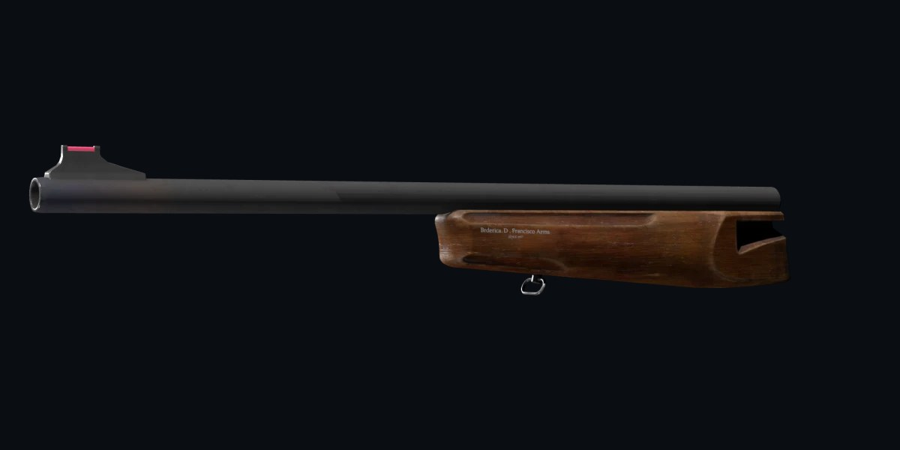
.357 Revolver : canon long
.357 Revolver Long Barrel · canon
Tube plus long, plus rigide, catégorie canon. 0.28 kg sur la balance. 1×2 cases d’encombrement. Il modifie l’équilibre de l’arme, généralement en échange d’un autre paramètre.
1×2 cases. 0,28 kg
3 444 Tekniqgrade 2 peu commun · 1 722 par case
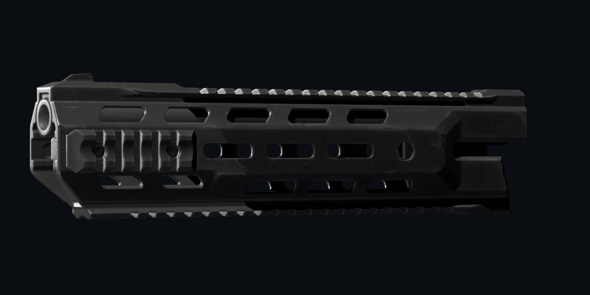
.357 Revolver Zephyr : canon
.357 Revolver Zephyr Barrel · canon
Tube plus long, plus rigide, catégorie canon. 0.25 kg sur la balance. 1×2 cases d’encombrement. Se monte sur les armes qui acceptent ce format, et sur elles uniquement.
1×2 cases. 0,25 kg
3 513 Tekniqgrade 2 peu commun · 1 757 par case
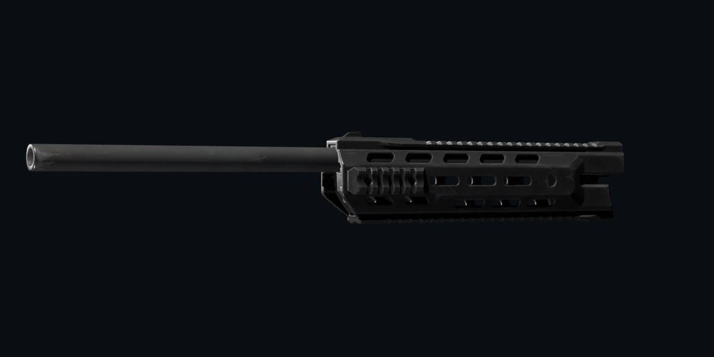
.357 Revolver Zephyr : canon long
.357 Revolver Zephyr Long Barrel · canon
Canon de rechange, catégorie canon. 0.3 kg sur la balance. 1×2 cases d’encombrement. Il modifie l’équilibre de l’arme, généralement en échange d’un autre paramètre.
1×2 cases. 0,3 kg
6 564 Tekniqgrade 2 peu commun · 3 282 par case
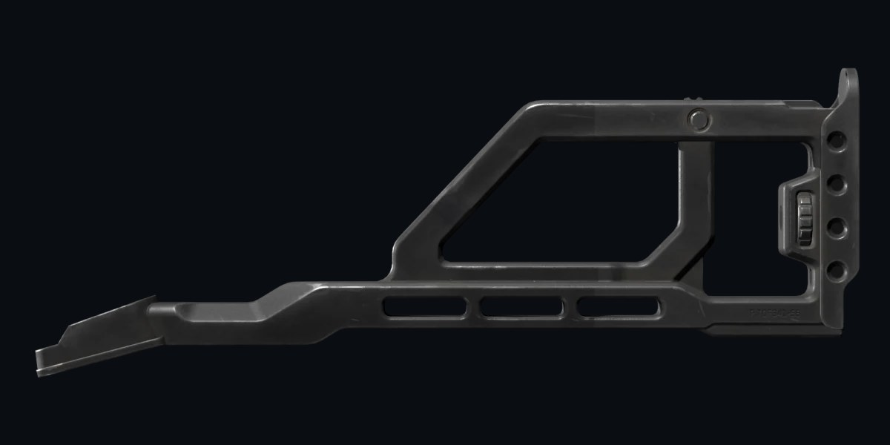
.357 Revolver Zephyr : crosse
.357 Revolver Zephyr Stock · crosse
Monture arrière plus stable, catégorie crosse. 0.35 kg sur la balance. 1×2 cases d’encombrement. Toutes les armes ne l’acceptent pas : la compatibilité se lit dans l’écran de personnalisation.
1×2 cases. 0,35 kg
6 565 Tekniqgrade 2 peu commun · 3 283 par case
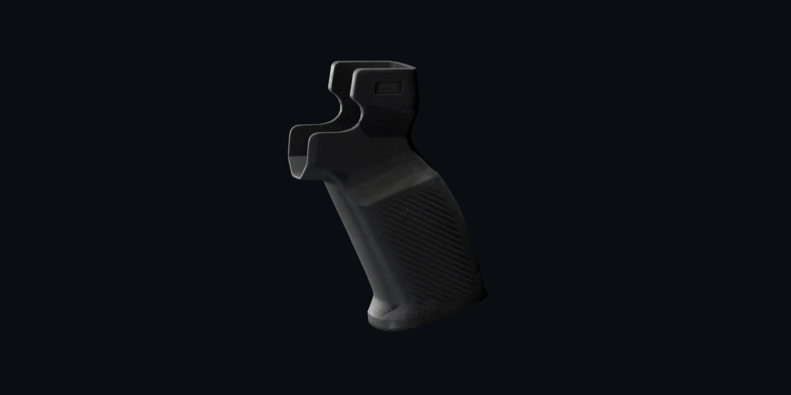
.357 Revolver Zephyr : poignée arrière
.357 Revolver Zephyr Rear Grip · poignée arrière
Poignée arrière, catégorie poignée arrière. 0.2 kg sur la balance. 1×1 cases d’encombrement. Compatible avec une partie des armes du catalogue seulement : vérifie la ligne d’arme avant de l’acheter.
1×1 cases. 0,2 kg
6 657 Tekniqgrade 2 peu commun · 6 657 par case
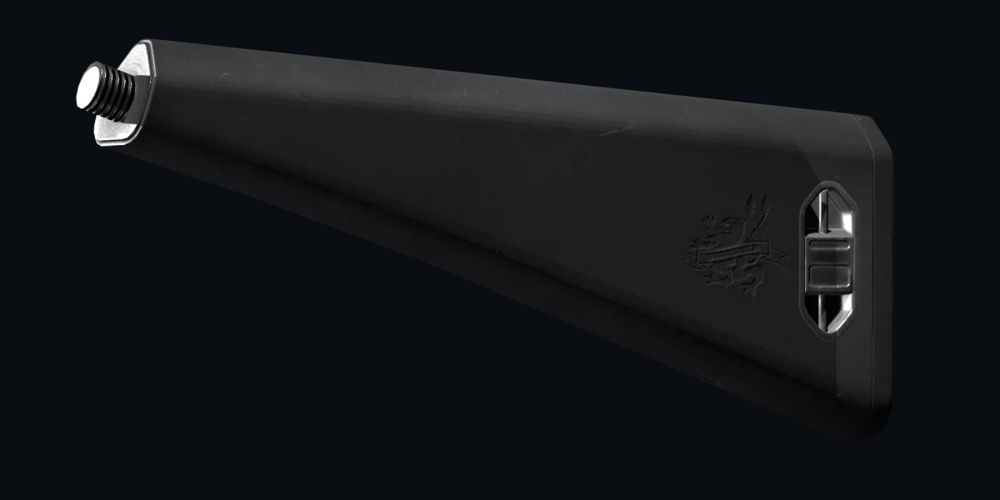
1014 : crosse fixe
1014 Fixed Stock · crosse
Crosse au profil différent, catégorie crosse. 0.61 kg sur la balance. 1×2 cases d’encombrement. Il modifie l’équilibre de l’arme, généralement en échange d’un autre paramètre.
1×2 cases. 0,61 kg
19 349 Tekniqgrade 3 rare · 9 675 par case
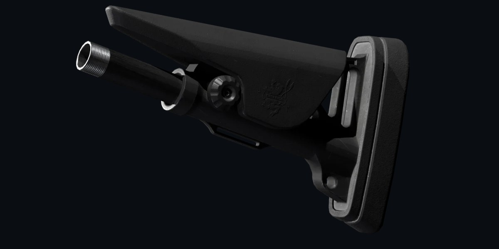
1014 : crosse télescopique déployée
1014 Collapsible Stock (Extended) · crosse
Crosse de remplacement, catégorie crosse. 0.54 kg sur la balance. 1×2 cases d’encombrement. Compatible avec une partie des armes du catalogue seulement : vérifie la ligne d’arme avant de l’acheter.
1×2 cases. 0,54 kg
92 252 Tekniqgrade 3 rare · 46 126 par case
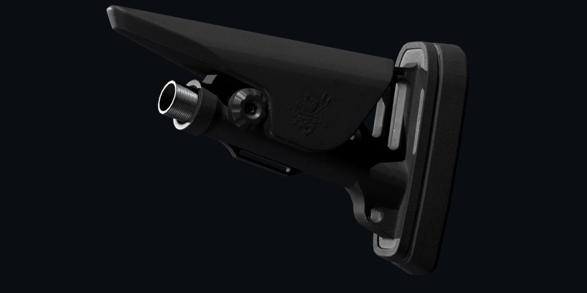
1014 : crosse télescopique repliée
1014 Collapsible Stock (Folded) · crosse
Crosse au profil différent, catégorie crosse. 0.61 kg sur la balance. 1×2 cases d’encombrement. Compatible avec une partie des armes du catalogue seulement : vérifie la ligne d’arme avant de l’acheter.
1×2 cases. 0,61 kg
51 656 Tekniqgrade 3 rare · 25 828 par case
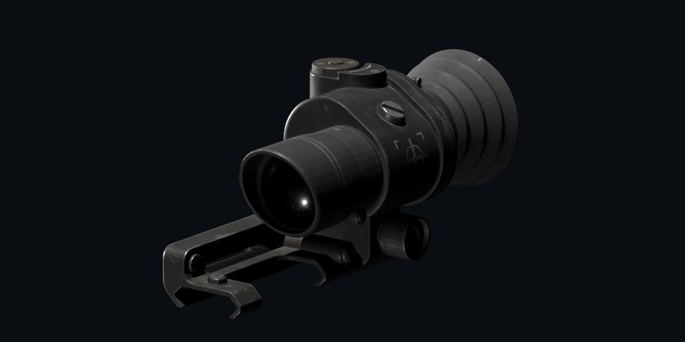
1P-29 russe 3x : lunette
1P-29 Russian 3x Scope · optique
Viseur grossissant, catégorie optique. 0.6 kg sur la balance. 1×1 cases d’encombrement. Se monte sur les armes qui acceptent ce format, et sur elles uniquement.
1×1 cases. 0,6 kg
36 229 Tekniqgrade 4 épique · 36 229 par case
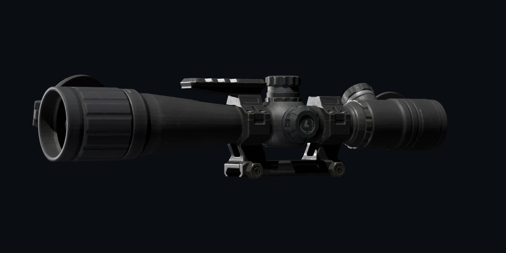
3/7 réglable : lunette
3/7 Adjustable Scope · optique
Lunette de visée, catégorie optique. 1.41 kg sur la balance. 1×2 cases d’encombrement. Compatible avec une partie des armes du catalogue seulement : vérifie la ligne d’arme avant de l’acheter.
1×2 cases. 1,41 kg
83 894 Tekniqgrade 4 épique · 41 947 par case
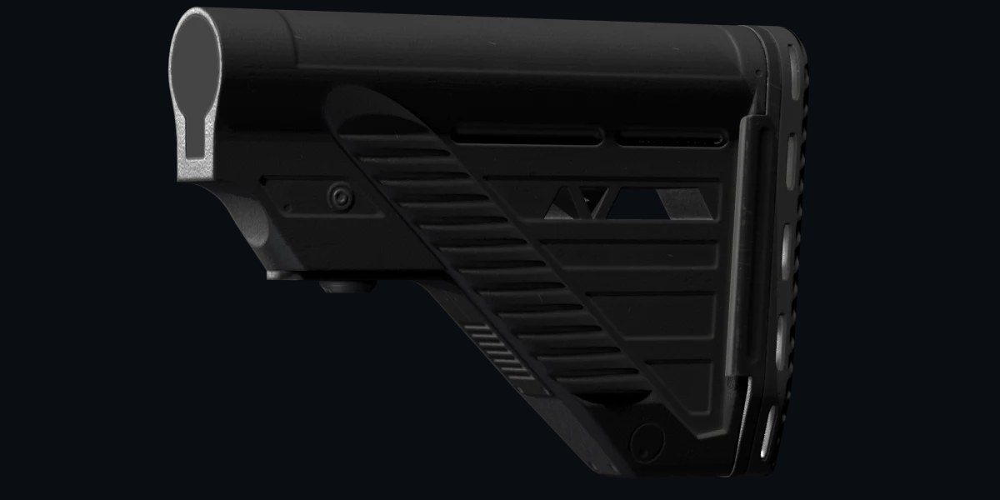
416 : crosse légère
416 Light Stock · crosse
Crosse au profil différent, catégorie crosse. 0.51 kg sur la balance. 1×2 cases d’encombrement. Compatible avec une partie des armes du catalogue seulement : vérifie la ligne d’arme avant de l’acheter.
1×2 cases. 0,51 kg
32 415 Tekniqgrade 3 rare · 16 208 par case
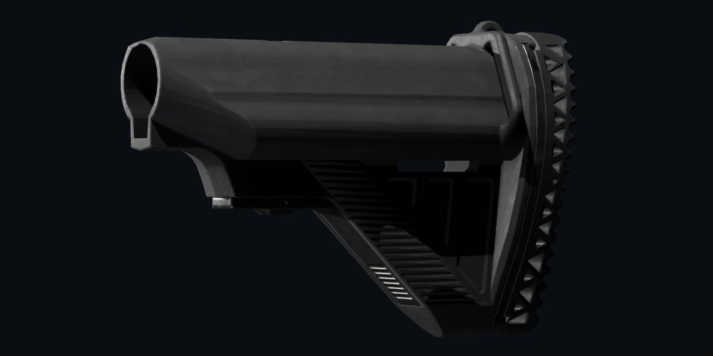
416 : crosse stable
416 Stable Stock · crosse
Crosse de remplacement, catégorie crosse. 0.59 kg sur la balance. 1×2 cases d’encombrement. Se monte sur les armes qui acceptent ce format, et sur elles uniquement.
1×2 cases. 0,59 kg
32 329 Tekniqgrade 3 rare · 16 165 par case
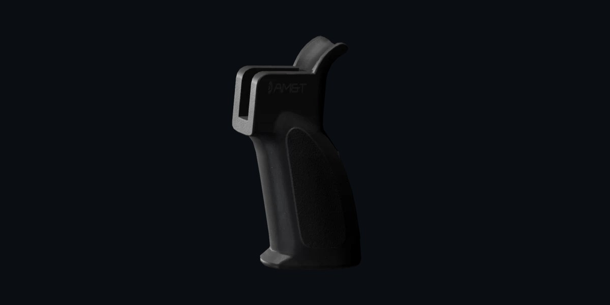
416 pratique : poignée arrière
416 Practical Rear Grip · poignée arrière
Poignée arrière, catégorie poignée arrière. 0.11 kg sur la balance. 1×1 cases d’encombrement. Compatible avec une partie des armes du catalogue seulement : vérifie la ligne d’arme avant de l’acheter.
1×1 cases. 0,11 kg
3 338 Tekniqgrade 2 peu commun · 3 338 par case
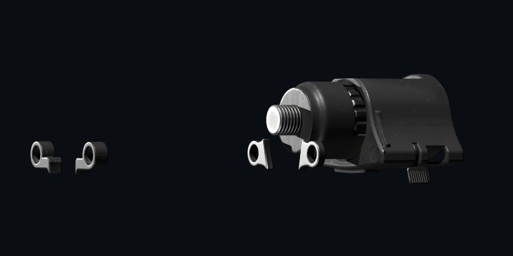
416-C Collapsible : crosse
416-C Collapsible Stock · crosse
Crosse au profil différent, catégorie crosse. 0.32 kg sur la balance. 1×1 cases d’encombrement. Compatible avec une partie des armes du catalogue seulement : vérifie la ligne d’arme avant de l’acheter.
1×1 cases. 0,32 kg
25 024 Tekniqgrade 4 épique · 25 024 par case
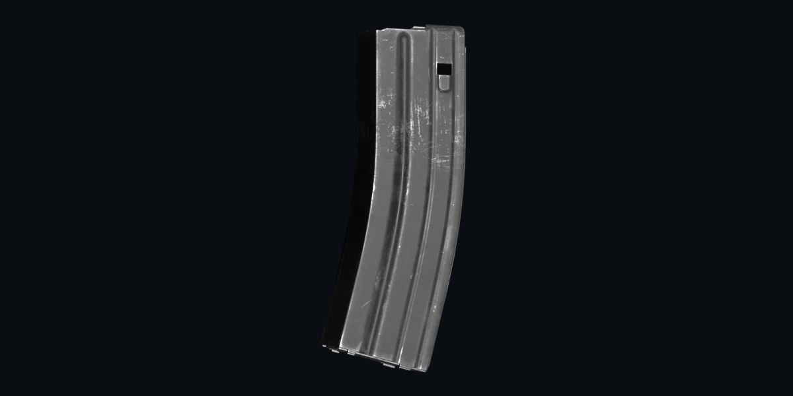
5.56x45, chargeur 30 coups en aluminium
5.56x45 30-Round Aluminum Mag · chargeur
Chargeur au format différent, catégorie chargeur. 0.19 kg sur la balance. 2×1 cases d’encombrement. Toutes les armes ne l’acceptent pas : la compatibilité se lit dans l’écran de personnalisation.
2×1 cases. 0,19 kg
3 374 Tekniqgrade 2 peu commun · 1 687 par case
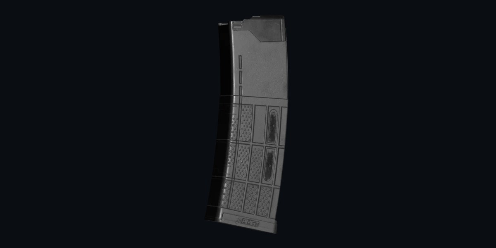
5.56x45, chargeur 30 coups en polymère
5.56x45 30-Round Polymer Mag · chargeur
Chargeur au format différent, catégorie chargeur. 0.25 kg sur la balance. 2×1 cases d’encombrement. Se monte sur les armes qui acceptent ce format, et sur elles uniquement.
2×1 cases. 0,25 kg
6 521 Tekniqgrade 2 peu commun · 3 261 par case
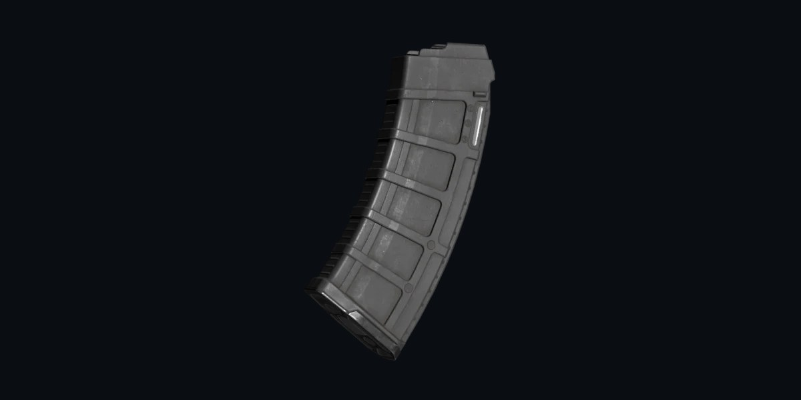
5.8 Newtype 30-Round : chargeur
5.8 Newtype 30-Round Mag · chargeur
Chargeur de capacité différente, catégorie chargeur. 0.1 kg sur la balance. 2×1 cases d’encombrement. Toutes les armes ne l’acceptent pas : la compatibilité se lit dans l’écran de personnalisation.
2×1 cases. 0,1 kg
6 864 Tekniqgrade 2 peu commun · 3 432 par case
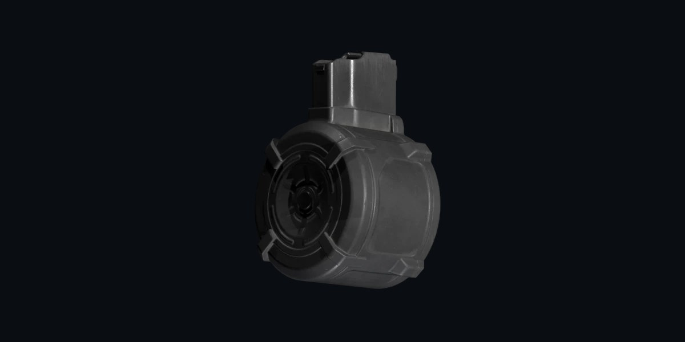
5.8 Newtype 60-Round : chargeur tambour
5.8 Newtype 60-Round Drum Mag · chargeur
Chargeur au format différent, catégorie chargeur. 0.4 kg sur la balance. 2×2 cases d’encombrement. Compatible avec une partie des armes du catalogue seulement : vérifie la ligne d’arme avant de l’acheter.
2×2 cases. 0,4 kg
21 083 Tekniqgrade 2 peu commun · 5 271 par case
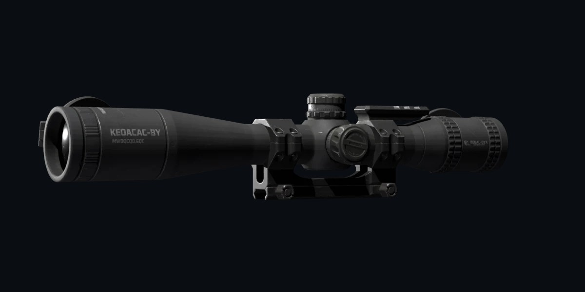
6/12 Expert précision : lunette
6/12 Expert Sniper Scope · optique
Lunette de visée, catégorie optique. 1.42 kg sur la balance. 1×2 cases d’encombrement. Compatible avec une partie des armes du catalogue seulement : vérifie la ligne d’arme avant de l’acheter.
1×2 cases. 1,42 kg
61 913 Tekniqgrade 4 épique · 30 957 par case
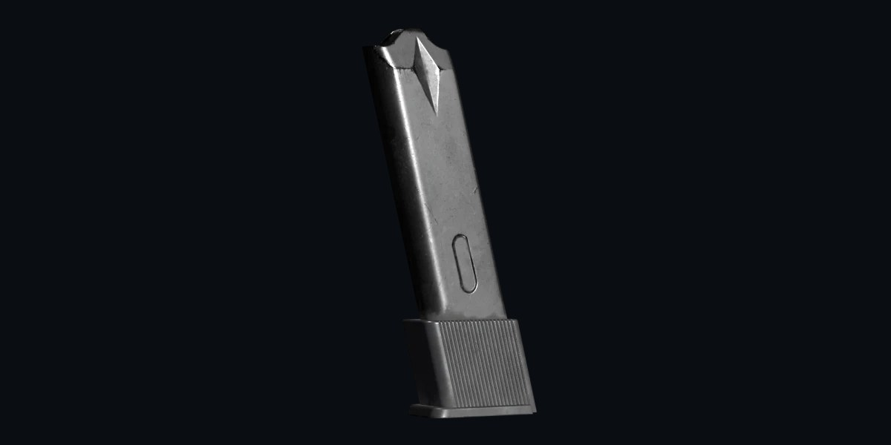
93R 18-Round : chargeur
93R 18-Round Mag · chargeur
Chargeur au format différent, catégorie chargeur. 0.13 kg sur la balance. 1×1 cases d’encombrement. Toutes les armes ne l’acceptent pas : la compatibilité se lit dans l’écran de personnalisation.
1×1 cases. 0,13 kg
3 772 Tekniqgrade 2 peu commun · 3 772 par case
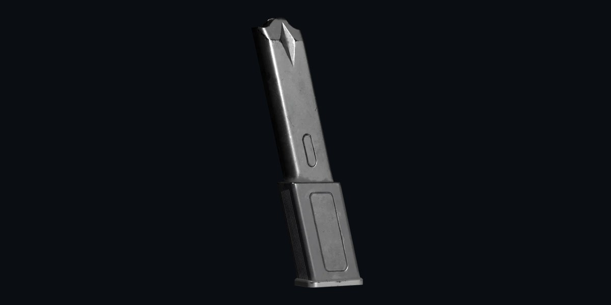
93R 24-Round : chargeur
93R 24-Round Mag · chargeur
Chargeur au format différent, catégorie chargeur. 0.11 kg sur la balance. 1×1 cases d’encombrement. Compatible avec une partie des armes du catalogue seulement : vérifie la ligne d’arme avant de l’acheter.
1×1 cases. 0,11 kg
5 007 Tekniqgrade 2 peu commun · 5 007 par case
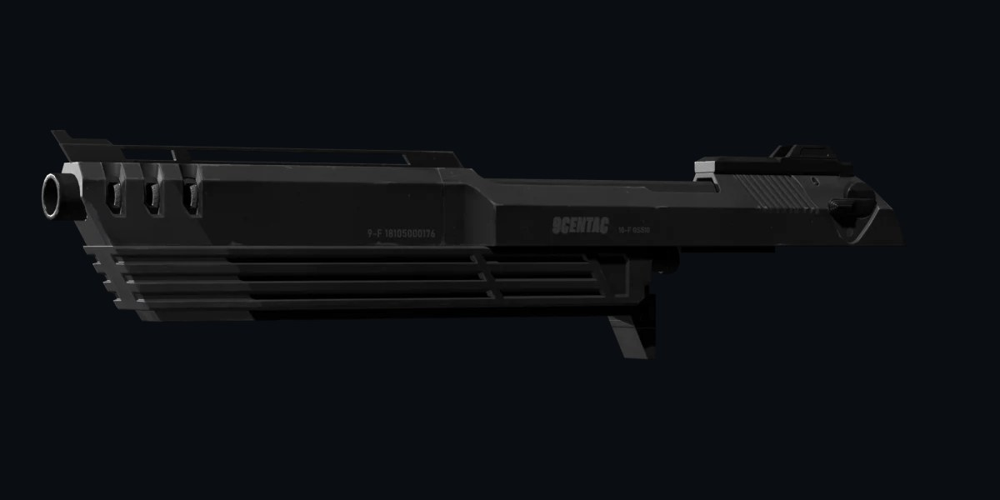
93R Longshot ultra-long : canon
93R Longshot Ultra-Long Barrel · canon
Canon au profil différent, catégorie canon. 0.35 kg sur la balance. 1×2 cases d’encombrement. Toutes les armes ne l’acceptent pas : la compatibilité se lit dans l’écran de personnalisation.
1×2 cases. 0,35 kg
7 519 Tekniqgrade 2 peu commun · 3 760 par case
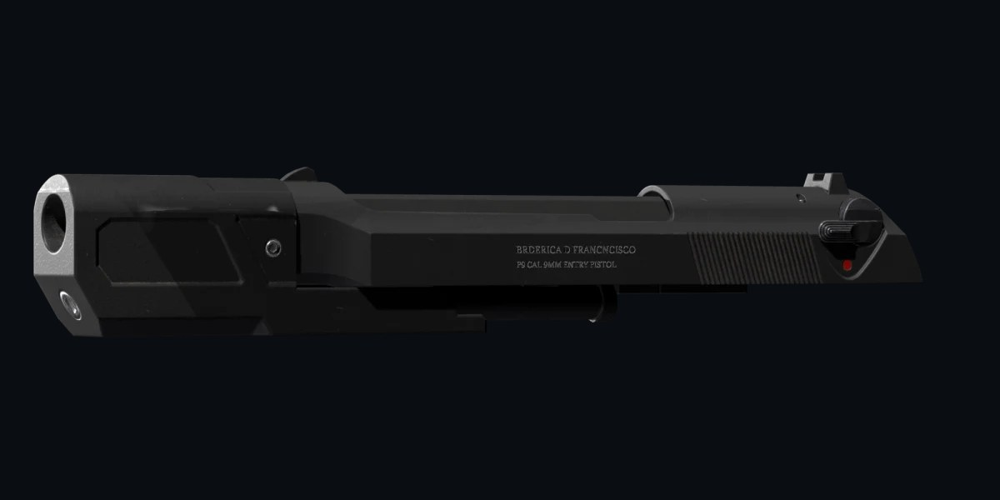
93R pratique : canon long
93R Practical Long Barrel · canon
Canon de rechange, catégorie canon. 0.28 kg sur la balance. 1×2 cases d’encombrement. Compatible avec une partie des armes du catalogue seulement : vérifie la ligne d’arme avant de l’acheter.
1×2 cases. 0,28 kg
3 748 Tekniqgrade 2 peu commun · 1 874 par case
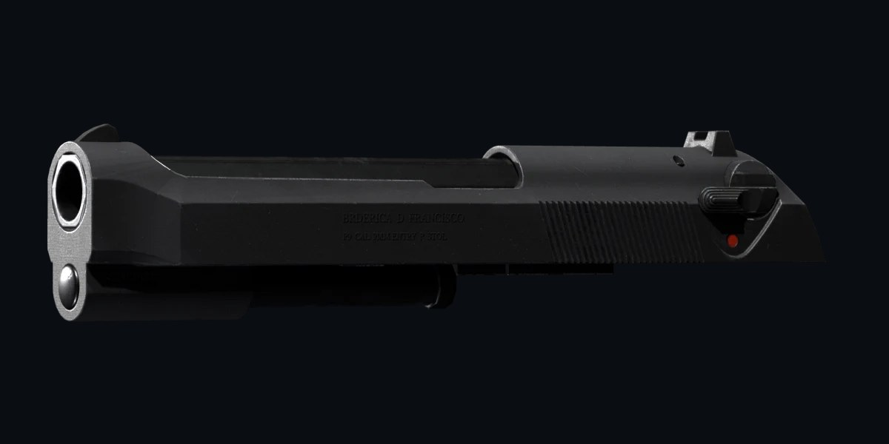
93R pratique lampe : canon
93R Practical Light Barrel · canon
Canon au profil différent, catégorie canon. 0.25 kg sur la balance. 1×2 cases d’encombrement. Toutes les armes ne l’acceptent pas : la compatibilité se lit dans l’écran de personnalisation.
1×2 cases. 0,25 kg
3 749 Tekniqgrade 2 peu commun · 1 875 par case
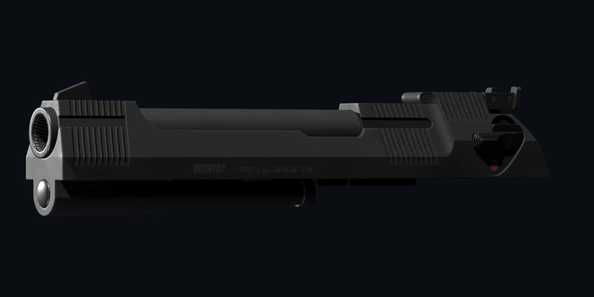
93R pratique lourd : canon
93R Practical Heavy Barrel · canon
Tube plus long, plus rigide, catégorie canon. 0.3 kg sur la balance. 1×2 cases d’encombrement. Se monte sur les armes qui acceptent ce format, et sur elles uniquement.
1×2 cases. 0,3 kg
3 775 Tekniqgrade 2 peu commun · 1 888 par case
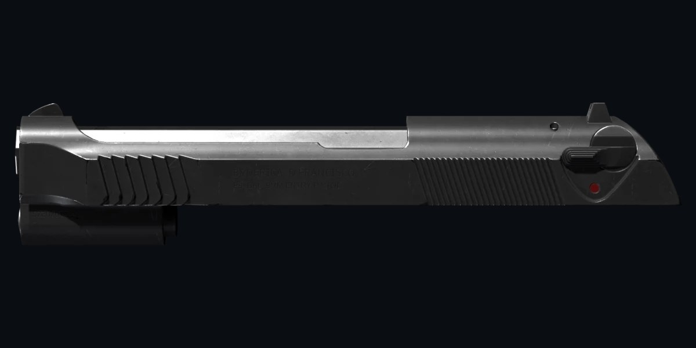
93R tactique : canon
93R Tactical Barrel · canon
Canon au profil différent, catégorie canon. 0.1 kg sur la balance. 1×2 cases d’encombrement. Compatible avec une partie des armes du catalogue seulement : vérifie la ligne d’arme avant de l’acheter.
1×2 cases. 0,1 kg
7 810 Tekniqgrade 2 peu commun · 3 905 par case
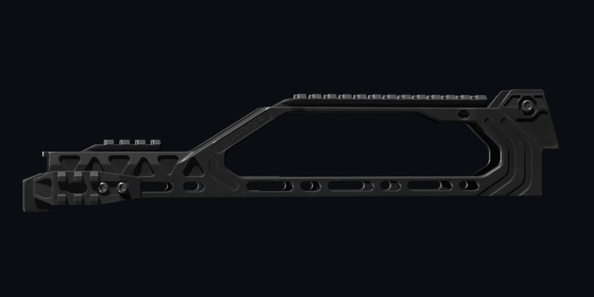
95 arc long plateforme : kit
95 Longbow Platform Kit · garde-main
Protège-main avant, catégorie garde-main. 0.15 kg sur la balance. 1×1 cases d’encombrement. Compatible avec une partie des armes du catalogue seulement : vérifie la ligne d’arme avant de l’acheter.
1×1 cases. 0,15 kg
15 761 Tekniqgrade 4 épique · 15 761 par case
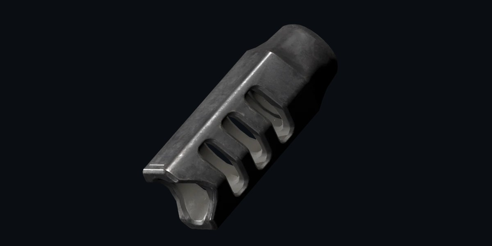
acier : frein de bouche
Steel Muzzle Brake · frein de bouche
Frein de bouche, catégorie frein de bouche. 0.37 kg sur la balance. 1×1 cases d’encombrement. Toutes les armes ne l’acceptent pas : la compatibilité se lit dans l’écran de personnalisation.
1×1 cases. 0,37 kg
13 546 Tekniqgrade 3 rare · 13 546 par case
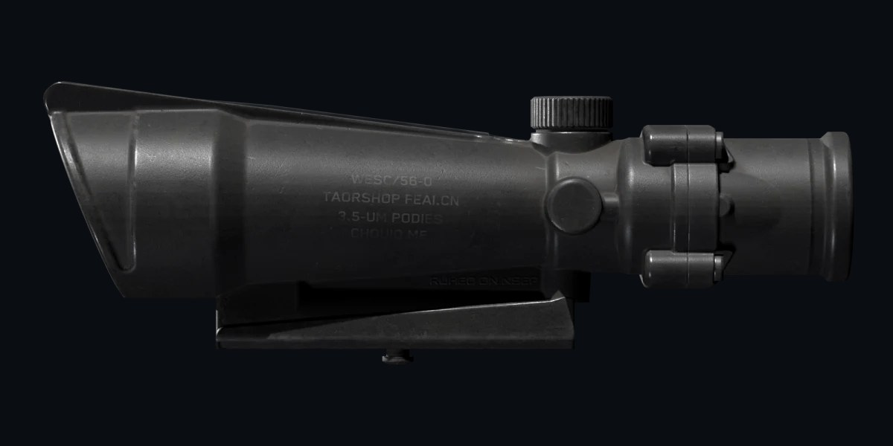
ACOG précision 6x : lunette
ACOG Precision 6x Scope · optique
Viseur grossissant, catégorie optique. 0.6 kg sur la balance. 1×2 cases d’encombrement. Il modifie l’équilibre de l’arme, généralement en échange d’un autre paramètre.
1×2 cases. 0,6 kg
42 155 Tekniqgrade 3 rare · 21 078 par case
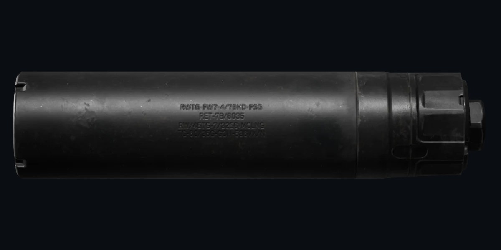
Advanced Multi-Caliber : silencieux
Advanced Multi-Caliber Suppressor · frein de bouche
Frein de bouche, catégorie frein de bouche. 0.1 kg sur la balance. 1×1 cases d’encombrement. Compatible avec une partie des armes du catalogue seulement : vérifie la ligne d’arme avant de l’acheter.
1×1 cases. 0,1 kg
53 951 Tekniqgrade 4 épique · 53 951 par case
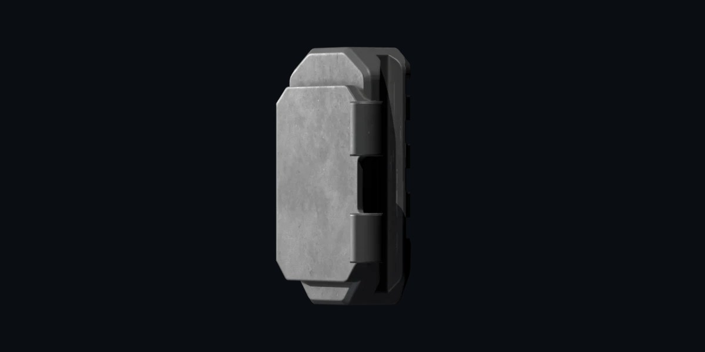
AK Bolt Cover
AK Bolt Cover · crosse
Crosse au profil différent, catégorie crosse. 0.2 kg sur la balance. 1×1 cases d’encombrement. Compatible avec une partie des armes du catalogue seulement : vérifie la ligne d’arme avant de l’acheter.
1×1 cases. 0,2 kg
1 679 Tekniqgrade 2 peu commun · 1 679 par case
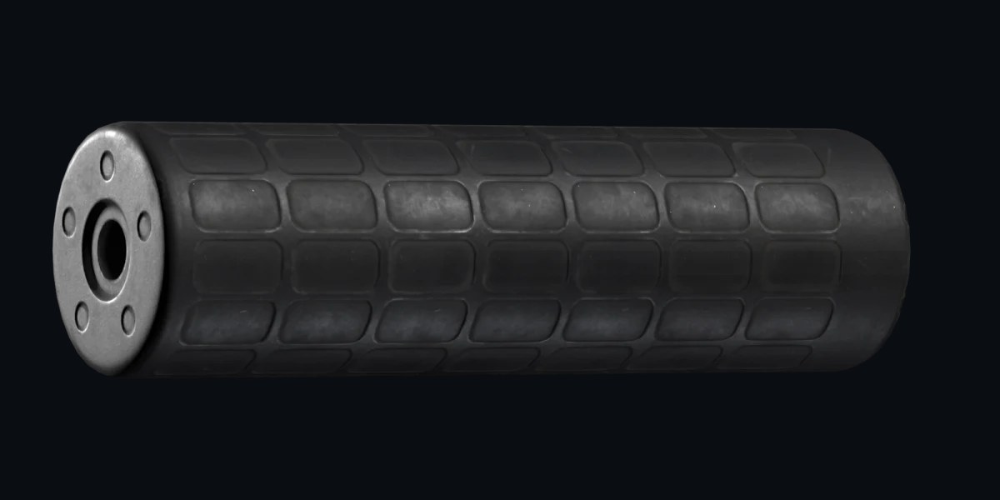
AK Bravefire : silencieux
AK Bravefire Suppressor · frein de bouche
Frein de bouche, catégorie frein de bouche. 0.8 kg sur la balance. 1×1 cases d’encombrement. Se monte sur les armes qui acceptent ce format, et sur elles uniquement.
1×1 cases. 0,8 kg
28 918 Tekniqgrade 4 épique · 28 918 par case
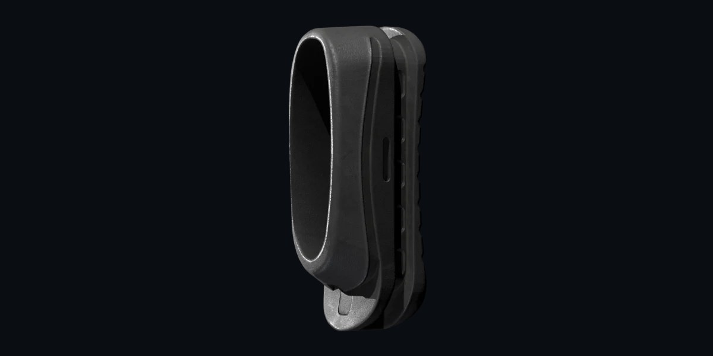
AK crosse : pad anti-recul
AK Stock Recoil Pad · crosse
Crosse au profil différent, catégorie crosse. 0.44 kg sur la balance. 1×1 cases d’encombrement. Compatible avec une partie des armes du catalogue seulement : vérifie la ligne d’arme avant de l’acheter.
1×1 cases. 0,44 kg
2 151 Tekniqgrade 2 peu commun · 2 151 par case
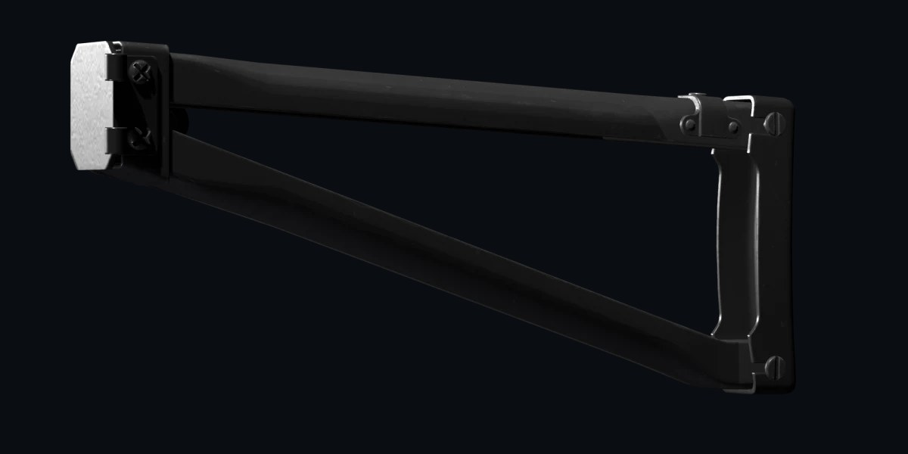
AK Folding : crosse
AK Folding Stock · crosse
Crosse de remplacement, catégorie crosse. 0.53 kg sur la balance. 1×2 cases d’encombrement. Il modifie l’équilibre de l’arme, généralement en échange d’un autre paramètre.
1×2 cases. 0,53 kg
17 813 Tekniqgrade 2 peu commun · 8 907 par case
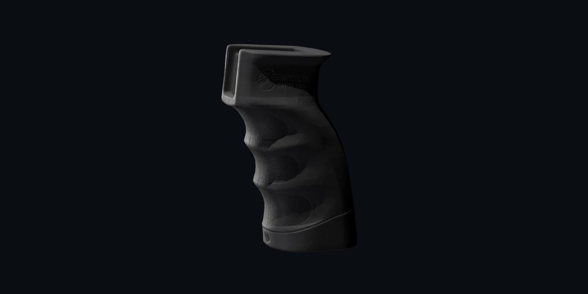
AK lourd Tower : poignée
AK Heavy Tower Grip · poignée arrière
Poignée de préhension arrière, catégorie poignée arrière. 0.22 kg sur la balance. 1×1 cases d’encombrement. Il modifie l’équilibre de l’arme, généralement en échange d’un autre paramètre.
1×1 cases. 0,22 kg
34 889 Tekniqgrade 4 épique · 34 889 par case
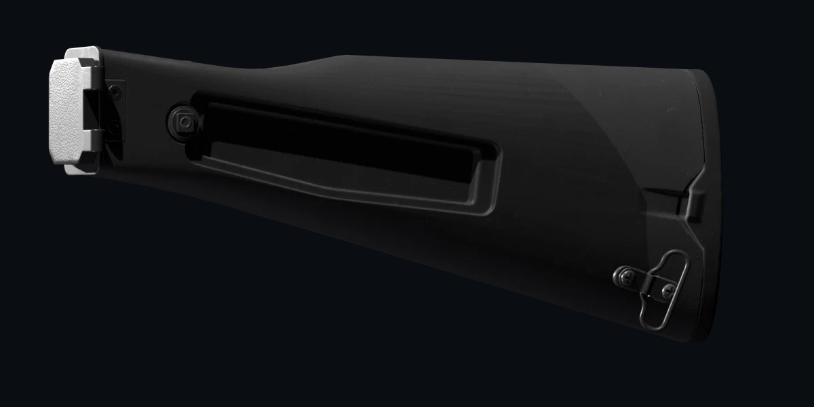
AK polymère : crosse
AK Polymer Stock · crosse
Crosse au profil différent, catégorie crosse. 0.48 kg sur la balance. 1×2 cases d’encombrement. Se monte sur les armes qui acceptent ce format, et sur elles uniquement.
1×2 cases. 0,48 kg
3 348 Tekniqgrade 2 peu commun · 1 674 par case
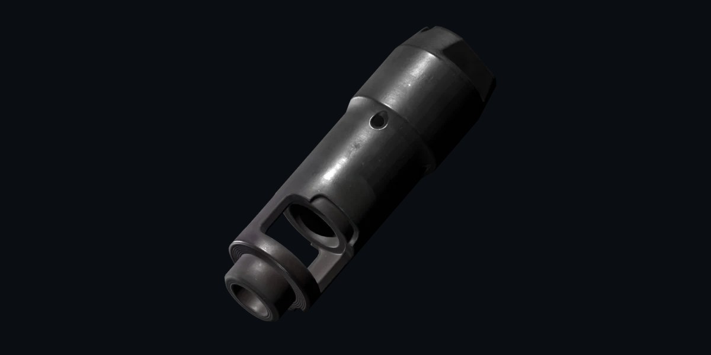
AK pratique : compensateur
AK Practical Compensator · frein de bouche
Compensateur de recul, catégorie frein de bouche. 0.41 kg sur la balance. 1×1 cases d’encombrement. Toutes les armes ne l’acceptent pas : la compatibilité se lit dans l’écran de personnalisation.
1×1 cases. 0,41 kg
13 418 Tekniqgrade 3 rare · 13 418 par case
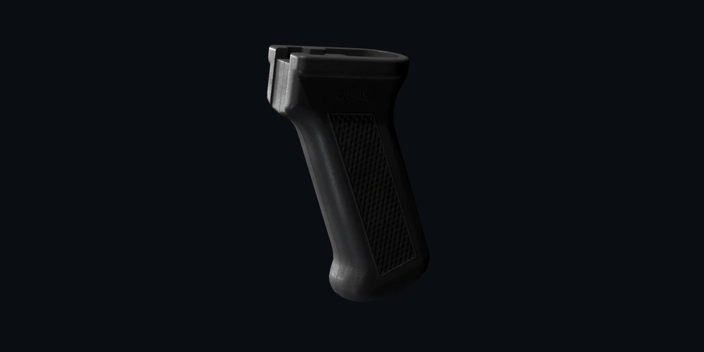
AK pratique : poignée arrière
AK Practical Rear Grip · poignée arrière
Poignée arrière, catégorie poignée arrière. 0.13 kg sur la balance. 1×1 cases d’encombrement. Toutes les armes ne l’acceptent pas : la compatibilité se lit dans l’écran de personnalisation.
1×1 cases. 0,13 kg
14 074 Tekniqgrade 3 rare · 14 074 par case
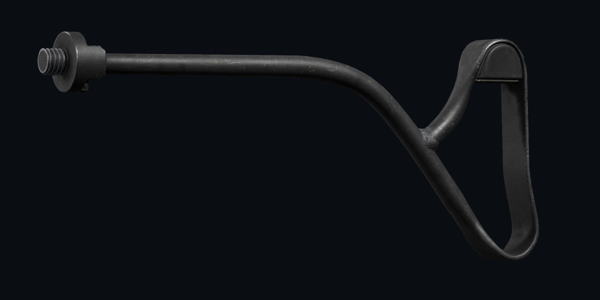
AK squelette : crosse
AK Skeleton Stock · crosse
Monture arrière plus stable, catégorie crosse. 0.43 kg sur la balance. 1×2 cases d’encombrement. Compatible avec une partie des armes du catalogue seulement : vérifie la ligne d’arme avant de l’acheter.
1×2 cases. 0,43 kg
3 331 Tekniqgrade 2 peu commun · 1 666 par case
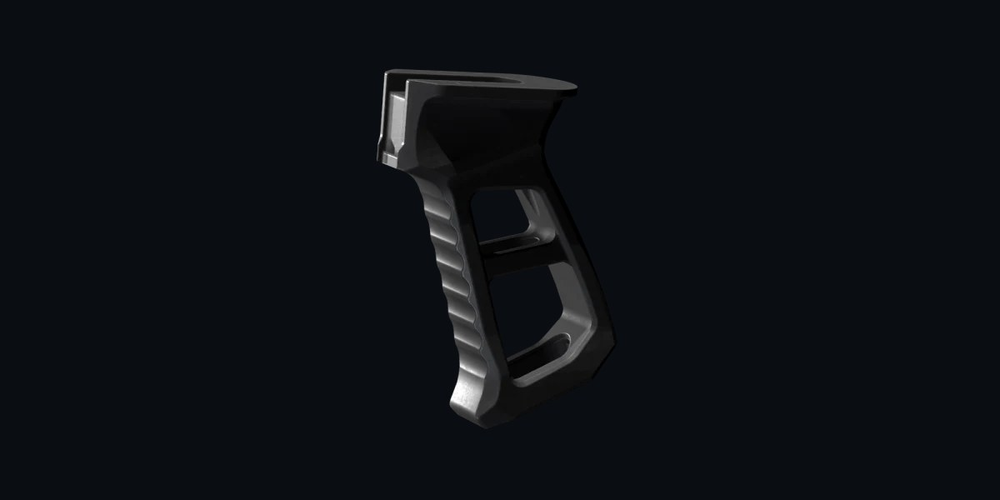
AK squelette : poignée avant
AK Skeleton Foregrip · poignée arrière
Poignée de préhension arrière, catégorie poignée arrière. 0.15 kg sur la balance. 1×1 cases d’encombrement. Compatible avec une partie des armes du catalogue seulement : vérifie la ligne d’arme avant de l’acheter.
1×1 cases. 0,15 kg
49 425 Tekniqgrade 4 épique · 49 425 par case
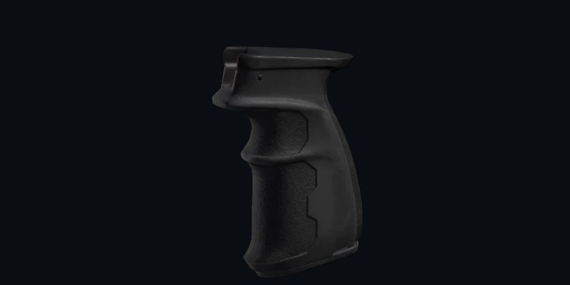
AK stable : poignée arrière
AK Stable Rear Grip · poignée arrière
Poignée arrière, catégorie poignée arrière. 0.21 kg sur la balance. 1×1 cases d’encombrement. Se monte sur les armes qui acceptent ce format, et sur elles uniquement.
1×1 cases. 0,21 kg
15 638 Tekniqgrade 3 rare · 15 638 par case
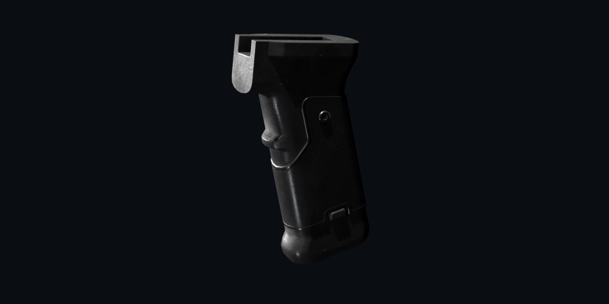
AK tireur d’élite : poignée arrière
AK Marksman Rear Grip · poignée arrière
Poignée de préhension arrière, catégorie poignée arrière. 0.15 kg sur la balance. 1×1 cases d’encombrement. Compatible avec une partie des armes du catalogue seulement : vérifie la ligne d’arme avant de l’acheter.
1×1 cases. 0,15 kg
14 198 Tekniqgrade 3 rare · 14 198 par case
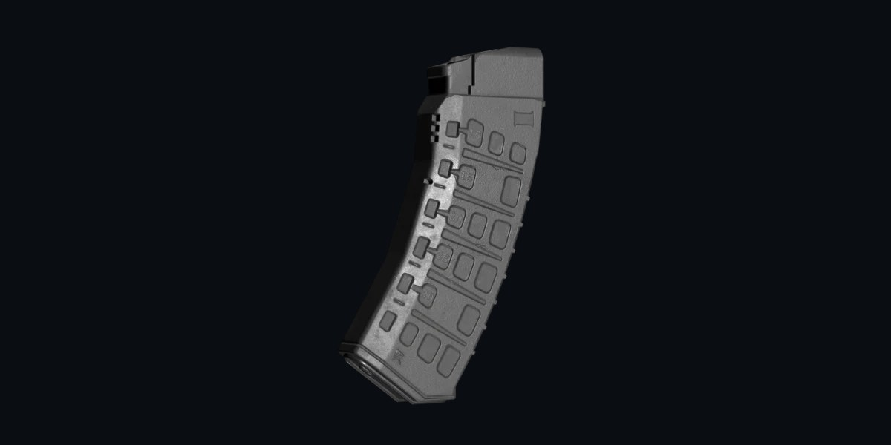
AK-12 30-Round polymère : chargeur
AK-12 30-Round Polymer Mag · chargeur
Chargeur de capacité différente, catégorie chargeur. 0.25 kg sur la balance. 2×1 cases d’encombrement. Compatible avec une partie des armes du catalogue seulement : vérifie la ligne d’arme avant de l’acheter.
2×1 cases. 0,25 kg
3 361 Tekniqgrade 2 peu commun · 1 681 par case
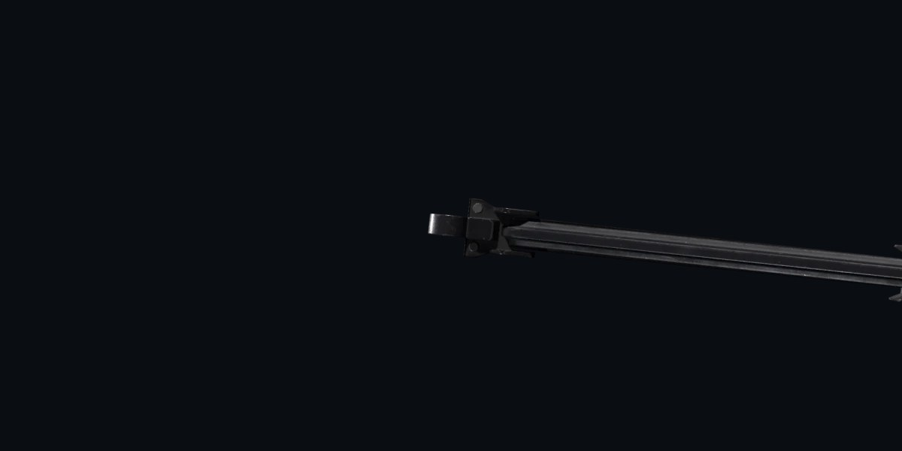
AK-12 : bipied
AK-12 Bipod · accessoire utilitaire
Module utilitaire, catégorie accessoire utilitaire. 0.6 kg sur la balance. 1×1 cases d’encombrement. Il modifie l’équilibre de l’arme, généralement en échange d’un autre paramètre.
1×1 cases. 0,6 kg
9 803 Tekniqgrade 3 rare · 9 803 par case
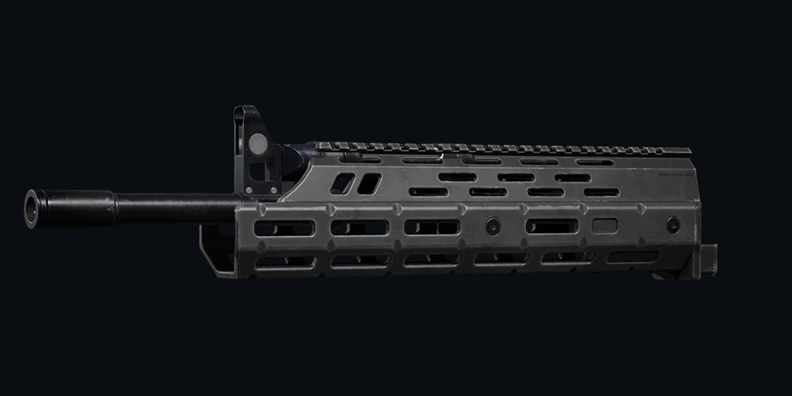
AK-12 Frontline : canon long
AK-12 Frontline Long Barrel · canon
Tube plus long, plus rigide, catégorie canon. 0.32 kg sur la balance. 1×2 cases d’encombrement. Se monte sur les armes qui acceptent ce format, et sur elles uniquement.
1×2 cases. 0,32 kg
35 977 Tekniqgrade 3 rare · 17 989 par case
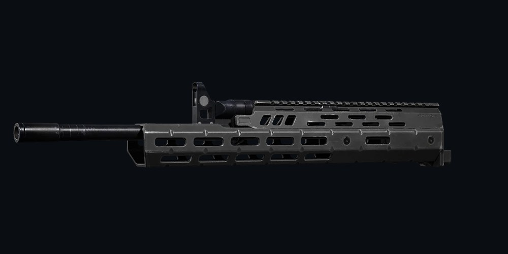
AK-12 élite Bipod : canon long
AK-12 Elite Bipod Long Barrel · canon
Canon de rechange, catégorie canon. 0.38 kg sur la balance. 1×2 cases d’encombrement. Se monte sur les armes qui acceptent ce format, et sur elles uniquement.
1×2 cases. 0,38 kg
60 150 Tekniqgrade 3 rare · 30 075 par case
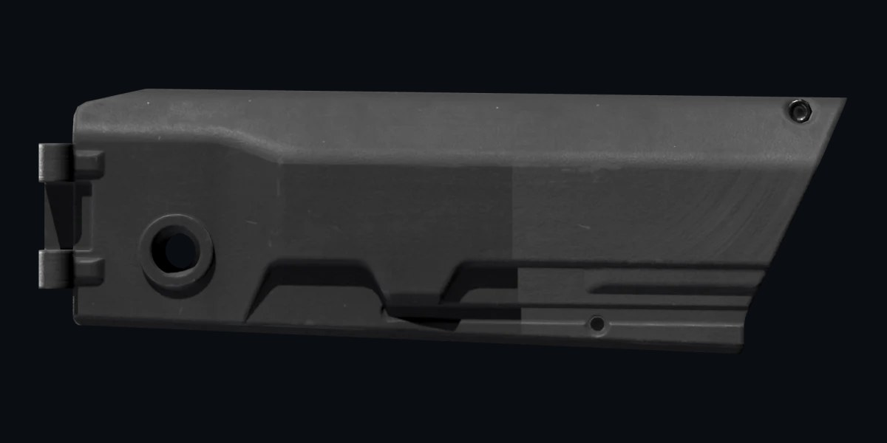
AK-19 : crosse
AK-19 Stock · crosse
Crosse au profil différent, catégorie crosse. 0.3 kg sur la balance. 1×2 cases d’encombrement. Se monte sur les armes qui acceptent ce format, et sur elles uniquement.
1×2 cases. 0,3 kg
12 649 Tekniqgrade 3 rare · 6 325 par case
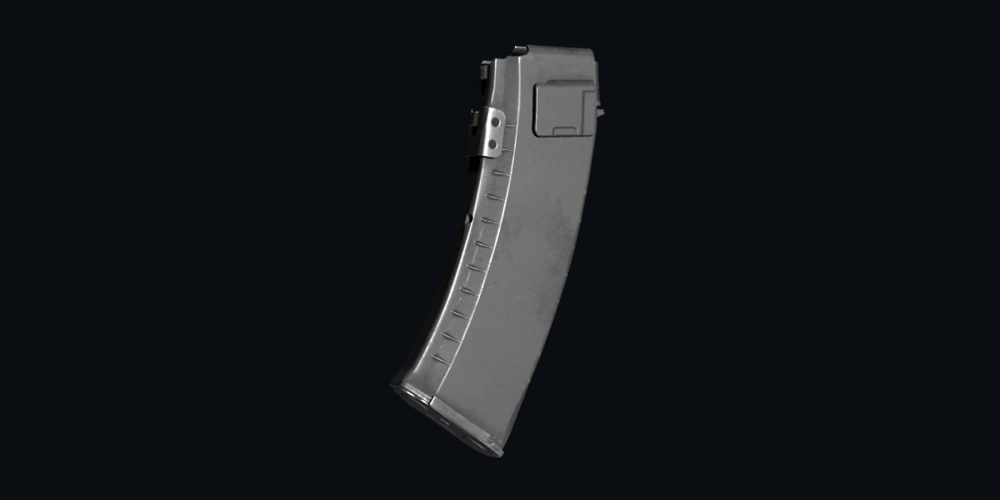
AK545 30-Round : chargeur
AK545 30-Round Mag · chargeur
Chargeur au format différent, catégorie chargeur. 0.17 kg sur la balance. 2×1 cases d’encombrement. Il modifie l’équilibre de l’arme, généralement en échange d’un autre paramètre.
2×1 cases. 0,17 kg
3 502 Tekniqgrade 2 peu commun · 1 751 par case
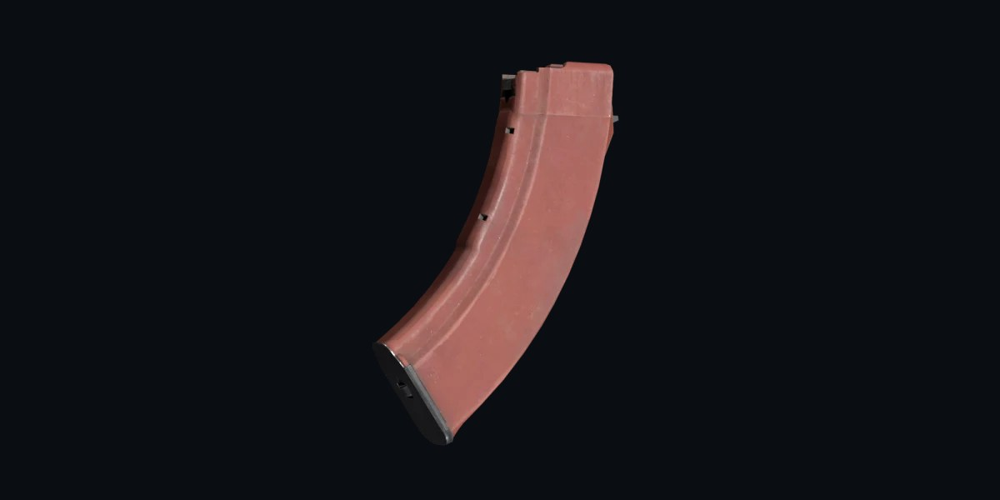
AK762 30-Round Wooden : chargeur
AK762 30-Round Wooden Mag · chargeur
Chargeur de capacité différente, catégorie chargeur. 0.17 kg sur la balance. 2×1 cases d’encombrement. Il modifie l’équilibre de l’arme, généralement en échange d’un autre paramètre.
2×1 cases. 0,17 kg
6 855 Tekniqgrade 2 peu commun · 3 428 par case
AKM 30-Round polymère : chargeur
AKM 30-Round Polymer Mag · chargeur
Chargeur au format différent, catégorie chargeur. 0.13 kg sur la balance. 1×1 cases d’encombrement. Se monte sur les armes qui acceptent ce format, et sur elles uniquement.
1×1 cases. 0,13 kg
3 341 Tekniqgrade 2 peu commun · 3 341 par case
AKM 40-Round : chargeur rallongé
AKM 40-Round Extended Mag · chargeur
Chargeur de capacité différente, catégorie chargeur. 0.17 kg sur la balance. 2×1 cases d’encombrement. Toutes les armes ne l’acceptent pas : la compatibilité se lit dans l’écran de personnalisation.
2×1 cases. 0,17 kg
24 312 Tekniqgrade 3 rare · 12 156 par case
AKM 70-Round Large : chargeur tambour
AKM 70-Round Large Drum Mag · chargeur
Chargeur au format différent, catégorie chargeur. 0.32 kg sur la balance. 2×2 cases d’encombrement. Compatible avec une partie des armes du catalogue seulement : vérifie la ligne d’arme avant de l’acheter.
2×2 cases. 0,32 kg
36 435 Tekniqgrade 3 rare · 9 109 par case
AKM Beaver : canon complet
AKM Beaver Barrel Combo · canon
Canon de rechange, catégorie canon. 0.3 kg sur la balance. 1×2 cases d’encombrement. Se monte sur les armes qui acceptent ce format, et sur elles uniquement.
1×2 cases. 0,3 kg
36 417 Tekniqgrade 3 rare · 18 209 par case
AKM Beaver long : canon complet
AKM Beaver Long Barrel Combo · canon
Tube plus long, plus rigide, catégorie canon. 0.29 kg sur la balance. 1×2 cases d’encombrement. Compatible avec une partie des armes du catalogue seulement : vérifie la ligne d’arme avant de l’acheter.
1×2 cases. 0,29 kg
63 966 Tekniqgrade 3 rare · 31 983 par case
AKM performance : canon complet
AKM Performance Barrel Combo · canon
Canon de rechange, catégorie canon. 0.3 kg sur la balance. 1×2 cases d’encombrement. Se monte sur les armes qui acceptent ce format, et sur elles uniquement.
1×2 cases. 0,3 kg
63 759 Tekniqgrade 4 épique · 31 880 par case

AKM pratique long : canon complet
AKM Practical Long Barrel Combo · canon
Canon de rechange, catégorie canon. 0.36 kg sur la balance. 1×2 cases d’encombrement. Il modifie l’équilibre de l’arme, généralement en échange d’un autre paramètre.
1×2 cases. 0,36 kg
12 519 Tekniqgrade 3 rare · 6 260 par case
AKM pratique Standard : canon complet
AKM Practical Standard Barrel Combo · canon
Tube plus long, plus rigide, catégorie canon. 0.33 kg sur la balance. 1×2 cases d’encombrement. Compatible avec une partie des armes du catalogue seulement : vérifie la ligne d’arme avant de l’acheter.
1×2 cases. 0,33 kg
16 547 Tekniqgrade 3 rare · 8 274 par case
AKM Transcendent long : canon complet
AKM Transcendent Long Barrel Combo · canon
Canon au profil différent, catégorie canon. 0.4 kg sur la balance. 1×2 cases d’encombrement. Toutes les armes ne l’acceptent pas : la compatibilité se lit dans l’écran de personnalisation.
1×2 cases. 0,4 kg
36 344 Tekniqgrade 3 rare · 18 172 par case
AKS-74 30-Round : chargeur
AKS-74 30-Round Mag · chargeur
Chargeur au format différent, catégorie chargeur. 0.1 kg sur la balance. 2×1 cases d’encombrement. Il modifie l’équilibre de l’arme, généralement en échange d’un autre paramètre.
2×1 cases. 0,1 kg
3 394 Tekniqgrade 2 peu commun · 1 697 par case
AKS-74 45-Round : chargeur rallongé
AKS-74 45-Round Extended Mag · chargeur
Chargeur de capacité différente, catégorie chargeur. 0.19 kg sur la balance. 2×1 cases d’encombrement. Compatible avec une partie des armes du catalogue seulement : vérifie la ligne d’arme avant de l’acheter.
2×1 cases. 0,19 kg
24 210 Tekniqgrade 3 rare · 12 105 par case
AKS-74 75-Round polymère : chargeur tambour
AKS-74 75-Round Polymer Drum Mag · chargeur
Chargeur de capacité différente, catégorie chargeur. 0.31 kg sur la balance. 2×2 cases d’encombrement. Se monte sur les armes qui acceptent ce format, et sur elles uniquement.
2×2 cases. 0,31 kg
25 268 Tekniqgrade 3 rare · 6 317 par case
AKS-74 Lower rail : garde-main
AKS-74 Lower Rail Handguard · garde-main
Garde-main, catégorie garde-main. 0.1 kg sur la balance. 1×1 cases d’encombrement. Compatible avec une partie des armes du catalogue seulement : vérifie la ligne d’arme avant de l’acheter.
1×1 cases. 0,1 kg
5 824 Tekniqgrade 3 rare · 5 824 par case
AKS-74 Upper rail : garde-main
AKS-74 Upper Rail Handguard · garde-main
Protège-main avant, catégorie garde-main. 0.1 kg sur la balance. 1×1 cases d’encombrement. Toutes les armes ne l’acceptent pas : la compatibilité se lit dans l’écran de personnalisation.
1×1 cases. 0,1 kg
22 929 Tekniqgrade 3 rare · 22 929 par case
Angled Hand Stop
Angled Hand Stop · poignée avant
Poignée de maintien avant, catégorie poignée avant. 0.14 kg sur la balance. 1×1 cases d’encombrement. Se monte sur les armes qui acceptent ce format, et sur elles uniquement.
1×1 cases. 0,14 kg
23 738 Tekniqgrade 4 épique · 23 738 par case
AP5000 Reflex : viseur
AP5000 Reflex Sight · optique
Lunette de visée, catégorie optique. 0.6 kg sur la balance. 1×1 cases d’encombrement. Il modifie l’équilibre de l’arme, généralement en échange d’un autre paramètre.
1×1 cases. 0,6 kg
5 358 Tekniqgrade 2 peu commun · 5 358 par case
AR carbone Fiber : canon complet
AR Carbon Fiber Barrel Combo · canon
Canon au profil différent, catégorie canon. Se monte sur les armes qui acceptent ce format, et sur elles uniquement.
13 719 Tekniqgrade 2 peu commun · 6 860 par case
AR Gabriel long : canon complet
AR Gabriel Long Barrel Combo · canon
Tube plus long, plus rigide, catégorie canon. 0.38 kg sur la balance. 1×2 cases d’encombrement. Se monte sur les armes qui acceptent ce format, et sur elles uniquement.
1×2 cases. 0,38 kg
50 653 Tekniqgrade 3 rare · 25 327 par case
AR lourd Tower : poignée
AR Heavy Tower Grip · poignée arrière
Poignée arrière, catégorie poignée arrière. 0.23 kg sur la balance. 1×1 cases d’encombrement. Toutes les armes ne l’acceptent pas : la compatibilité se lit dans l’écran de personnalisation.
1×1 cases. 0,23 kg
24 763 Tekniqgrade 4 épique · 24 763 par case
AR opérations spéciales intégré : ensemble intégralement modéré
AR SpecOps Integrally Suppressed Combo · canon
Canon au profil différent, catégorie canon. 0.36 kg sur la balance. 1×2 cases d’encombrement. Se monte sur les armes qui acceptent ce format, et sur elles uniquement.
1×2 cases. 0,36 kg
70 600 Tekniqgrade 4 épique · 35 300 par case
AR raid court : canon complet
AR Raid Short Barrel Combo · canon
Canon de rechange, catégorie canon. 0.33 kg sur la balance. 1×2 cases d’encombrement. Se monte sur les armes qui acceptent ce format, et sur elles uniquement.
1×2 cases. 0,33 kg
34 644 Tekniqgrade 3 rare · 17 322 par case
AR Standard : canon complet
AR Standard Barrel Combo · canon
Canon de rechange, catégorie canon. 0.25 kg sur la balance. 1×2 cases d’encombrement. Se monte sur les armes qui acceptent ce format, et sur elles uniquement.
1×2 cases. 0,25 kg
5 249 Tekniqgrade 2 peu commun · 2 625 par case
AR tranchée Standard : canon complet
AR Trench Standard Barrel Combo · canon
Canon au profil différent, catégorie canon. 0.35 kg sur la balance. 1×2 cases d’encombrement. Il modifie l’équilibre de l’arme, généralement en échange d’un autre paramètre.
1×2 cases. 0,35 kg
16 858 Tekniqgrade 3 rare · 8 429 par case
AS Val Bolt Cover
AS Val Bolt Cover · crosse
Monture arrière plus stable, catégorie crosse. Compatible avec une partie des armes du catalogue seulement : vérifie la ligne d’arme avant de l’acheter.
7 511 Tekniqgrade 3 rare · 7 511 par case
ASh-12 30-Round : chargeur rallongé
ASh-12 30-Round Extended Mag · chargeur
Chargeur au format différent, catégorie chargeur. 0.2 kg sur la balance. 2×1 cases d’encombrement. Compatible avec une partie des armes du catalogue seulement : vérifie la ligne d’arme avant de l’acheter.
2×1 cases. 0,2 kg
30 302 Tekniqgrade 4 épique · 15 151 par case
ASh-12 Annihilator précision : canon long
ASh-12 Annihilator Precision Long Barrel · canon
Canon de rechange, catégorie canon. 0.25 kg sur la balance. 1×2 cases d’encombrement. Compatible avec une partie des armes du catalogue seulement : vérifie la ligne d’arme avant de l’acheter.
1×2 cases. 0,25 kg
28 775 Tekniqgrade 4 épique · 14 388 par case
ASh-12 CQB : canon court
ASh-12 CQB Short Barrel · canon
Canon de rechange, catégorie canon. 0.23 kg sur la balance. 1×2 cases d’encombrement. Toutes les armes ne l’acceptent pas : la compatibilité se lit dans l’écran de personnalisation.
1×2 cases. 0,23 kg
33 987 Tekniqgrade 4 épique · 16 994 par case
ASh-12 précision : crosse
ASh-12 Sniper Stock · crosse
Monture arrière plus stable, catégorie crosse. 0.55 kg sur la balance. 1×2 cases d’encombrement. Il modifie l’équilibre de l’arme, généralement en échange d’un autre paramètre.
1×2 cases. 0,55 kg
53 958 Tekniqgrade 4 épique · 26 979 par case
ASh-12 squelette : crosse
ASh-12 Skeleton Stock · crosse
Crosse de remplacement, catégorie crosse. 0.52 kg sur la balance. 1×2 cases d’encombrement. Il modifie l’équilibre de l’arme, généralement en échange d’un autre paramètre.
1×2 cases. 0,52 kg
66 708 Tekniqgrade 4 épique · 33 354 par case
AUG 60-Round : chargeur tambour
AUG 60-Round Drum Mag · chargeur
Chargeur au format différent, catégorie chargeur. 0.19 kg sur la balance. 2×1 cases d’encombrement. Toutes les armes ne l’acceptent pas : la compatibilité se lit dans l’écran de personnalisation.
2×1 cases. 0,19 kg
35 855 Tekniqgrade 3 rare · 17 928 par case
AUG : bipied
AUG Bipod · accessoire utilitaire
Accessoire utilitaire, catégorie accessoire utilitaire. 0.6 kg sur la balance. 1×1 cases d’encombrement. Compatible avec une partie des armes du catalogue seulement : vérifie la ligne d’arme avant de l’acheter.
1×1 cases. 0,6 kg
10 206 Tekniqgrade 3 rare · 10 206 par case
AUG : pad de crosse
AUG Stock Pad · crosse
Crosse de remplacement, catégorie crosse. Compatible avec une partie des armes du catalogue seulement : vérifie la ligne d’arme avant de l’acheter.
74 572 Tekniqgrade 3 rare · 37 286 par case
AUG Dawn Zero intégré Suppressed : canon
AUG Dawn Zero Integrally Suppressed Barrel · canon
Canon de rechange, catégorie canon. 0.41 kg sur la balance. 1×2 cases d’encombrement. Se monte sur les armes qui acceptent ce format, et sur elles uniquement.
1×2 cases. 0,41 kg
113 802 Tekniqgrade 4 épique · 56 901 par case
AUG pratique intégral 3x lunette : canon
AUG Practical Integral 3x Scope Barrel · canon
Tube plus long, plus rigide, catégorie canon. 0.4 kg sur la balance. 1×2 cases d’encombrement. Se monte sur les armes qui acceptent ce format, et sur elles uniquement.
1×2 cases. 0,4 kg
31 831 Tekniqgrade 3 rare · 15 916 par case
AUG Vanguard Standard : canon
AUG Vanguard Standard Barrel · canon
Canon de rechange, catégorie canon. 0.37 kg sur la balance. 1×2 cases d’encombrement. Toutes les armes ne l’acceptent pas : la compatibilité se lit dans l’écran de personnalisation.
1×2 cases. 0,37 kg
36 390 Tekniqgrade 3 rare · 18 195 par case
AUG élite Bipod : canon long
AUG Elite Bipod Long Barrel · canon
Tube plus long, plus rigide, catégorie canon. 0.41 kg sur la balance. 1×2 cases d’encombrement. Compatible avec une partie des armes du catalogue seulement : vérifie la ligne d’arme avant de l’acheter.
1×2 cases. 0,41 kg
65 401 Tekniqgrade 3 rare · 32 701 par case
AWM : bipied
AWM Bipod · accessoire utilitaire
Module utilitaire, catégorie accessoire utilitaire. 0.75 kg sur la balance. 1×2 cases d’encombrement. Il modifie l’équilibre de l’arme, généralement en échange d’un autre paramètre.
1×2 cases. 0,75 kg
19 885 Tekniqgrade 3 rare · 9 943 par case
AWM M-Lok : kit
AWM M-Lok Kit · garde-main
Garde-main, catégorie garde-main. 0.19 kg sur la balance. 1×1 cases d’encombrement. Compatible avec une partie des armes du catalogue seulement : vérifie la ligne d’arme avant de l’acheter.
1×1 cases. 0,19 kg
22 205 Tekniqgrade 4 épique · 22 205 par case
AWM Skyline : canon long
AWM Skyline Long Barrel · canon
Canon de rechange, catégorie canon. 0.43 kg sur la balance. 1×2 cases d’encombrement. Se monte sur les armes qui acceptent ce format, et sur elles uniquement.
1×2 cases. 0,43 kg
27 412 Tekniqgrade 4 épique · 13 706 par case
Badger Small Mag Assist (Black)
Badger Small Mag Assist (Black) · accessoire utilitaire
Module utilitaire, catégorie accessoire utilitaire. 0.2 kg sur la balance. 1×1 cases d’encombrement. Toutes les armes ne l’acceptent pas : la compatibilité se lit dans l’écran de personnalisation.
1×1 cases. 0,2 kg
5 313 Tekniqgrade 2 peu commun · 5 313 par case
Badger Small Mag Assist (Green)
Badger Small Mag Assist (Green) · accessoire utilitaire
Accessoire utilitaire, catégorie accessoire utilitaire. 0.2 kg sur la balance. 1×1 cases d’encombrement. Compatible avec une partie des armes du catalogue seulement : vérifie la ligne d’arme avant de l’acheter.
1×1 cases. 0,2 kg
5 310 Tekniqgrade 2 peu commun · 5 310 par case
Badger Small Mag Assist (Sand)
Badger Small Mag Assist (Sand) · accessoire utilitaire
Module utilitaire, catégorie accessoire utilitaire. 0.2 kg sur la balance. 1×1 cases d’encombrement. Se monte sur les armes qui acceptent ce format, et sur elles uniquement.
1×1 cases. 0,2 kg
5 316 Tekniqgrade 2 peu commun · 5 316 par case
Bastion Horizontal : compensateur
Bastion Horizontal Compensator · frein de bouche
Frein de bouche, catégorie frein de bouche. 0.57 kg sur la balance. 1×1 cases d’encombrement. Compatible avec une partie des armes du catalogue seulement : vérifie la ligne d’arme avant de l’acheter.
1×1 cases. 0,57 kg
42 458 Tekniqgrade 4 épique · 42 458 par case
Bell Mouth : cache-flamme
Bell Mouth Flash Hider · frein de bouche
Frein de bouche, catégorie frein de bouche. 0.67 kg sur la balance. 1×1 cases d’encombrement. Il modifie l’équilibre de l’arme, généralement en échange d’un autre paramètre.
1×1 cases. 0,67 kg
5 035 Tekniqgrade 2 peu commun · 5 035 par case
Birdcage : cache-flamme
Birdcage Flash Hider · frein de bouche
Compensateur de recul, catégorie frein de bouche. 0.71 kg sur la balance. 1×1 cases d’encombrement. Toutes les armes ne l’acceptent pas : la compatibilité se lit dans l’écran de personnalisation.
1×1 cases. 0,71 kg
5 006 Tekniqgrade 2 peu commun · 5 006 par case
Bizon 64-Round Helical : chargeur
Bizon 64-Round Helical Mag · chargeur
Chargeur de capacité différente, catégorie chargeur. 0.19 kg sur la balance. 2×1 cases d’encombrement. Compatible avec une partie des armes du catalogue seulement : vérifie la ligne d’arme avant de l’acheter.
2×1 cases. 0,19 kg
8 961 Tekniqgrade 2 peu commun · 4 481 par case

Bizon Blade ultra-long : canon
Bizon Blade Ultra-Long Barrel · canon
Canon au profil différent, catégorie canon. 0.29 kg sur la balance. 1×2 cases d’encombrement. Compatible avec une partie des armes du catalogue seulement : vérifie la ligne d’arme avant de l’acheter.
1×2 cases. 0,29 kg
27 287 Tekniqgrade 3 rare · 13 644 par case
Bizon carbone Fiber : garde-main
Bizon Carbon Fiber Handguard · garde-main
Protège-main avant, catégorie garde-main. 0.22 kg sur la balance. 1×2 cases d’encombrement. Compatible avec une partie des armes du catalogue seulement : vérifie la ligne d’arme avant de l’acheter.
1×2 cases. 0,22 kg
16 782 Tekniqgrade 2 peu commun · 8 391 par case

Bizon Paratrooper : canon court
Bizon Paratrooper Short Barrel · canon
Canon au profil différent, catégorie canon. 0.25 kg sur la balance. 1×2 cases d’encombrement. Toutes les armes ne l’acceptent pas : la compatibilité se lit dans l’écran de personnalisation.
1×2 cases. 0,25 kg
26 435 Tekniqgrade 3 rare · 13 218 par case
Bizon Striker Standard : canon
Bizon Striker Standard Barrel · canon
Tube plus long, plus rigide, catégorie canon. 0.27 kg sur la balance. 1×2 cases d’encombrement. Se monte sur les armes qui acceptent ce format, et sur elles uniquement.
1×2 cases. 0,27 kg
15 352 Tekniqgrade 3 rare · 7 676 par case
Blazing Fire : silencieux
Blazing Fire Suppressor · frein de bouche
Frein de bouche, catégorie frein de bouche. 0.5 kg sur la balance. 1×1 cases d’encombrement. Compatible avec une partie des armes du catalogue seulement : vérifie la ligne d’arme avant de l’acheter.
1×1 cases. 0,5 kg
18 151 Tekniqgrade 4 épique · 18 151 par case
CAR-15 Bound Flashlight
CAR-15 Bound Flashlight · accessoire utilitaire
Module utilitaire, catégorie accessoire utilitaire. 0.3 kg sur la balance. 1×1 cases d’encombrement. Toutes les armes ne l’acceptent pas : la compatibilité se lit dans l’écran de personnalisation.
1×1 cases. 0,3 kg
2 618 Tekniqgrade 2 peu commun · 2 618 par case
Cardinal : crosse stable
Cardinal Stable Stock · crosse
Crosse au profil différent, catégorie crosse. 0.58 kg sur la balance. 1×2 cases d’encombrement. Se monte sur les armes qui acceptent ce format, et sur elles uniquement.
1×2 cases. 0,58 kg
24 165 Tekniqgrade 3 rare · 12 083 par case
Cardinal Advanced combat : crosse
Cardinal Advanced Combat Stock · crosse
Crosse au profil différent, catégorie crosse. 0.59 kg sur la balance. 1×2 cases d’encombrement. Compatible avec une partie des armes du catalogue seulement : vérifie la ligne d’arme avant de l’acheter.
1×2 cases. 0,59 kg
36 228 Tekniqgrade 3 rare · 18 114 par case
CI-19 High Flow : bloc de Gaz
CI-19 High Flow Gas Block · accessoire utilitaire
Module utilitaire, catégorie accessoire utilitaire. 0.1 kg sur la balance. 1×1 cases d’encombrement. Toutes les armes ne l’acceptent pas : la compatibilité se lit dans l’écran de personnalisation.
1×1 cases. 0,1 kg
48 562 Tekniqgrade 4 épique · 48 562 par case
CI-19 Leopard : canon court
CI-19 Leopard Short Barrel · canon
Canon de rechange, catégorie canon. 0.3 kg sur la balance. 1×2 cases d’encombrement. Il modifie l’équilibre de l’arme, généralement en échange d’un autre paramètre.
1×2 cases. 0,3 kg
27 306 Tekniqgrade 3 rare · 13 653 par case
CI-19 Leviathan tactique : canon long
CI-19 Leviathan Tactical Long Barrel · canon
Canon de rechange, catégorie canon. 0.3 kg sur la balance. 1×2 cases d’encombrement. Il modifie l’équilibre de l’arme, généralement en échange d’un autre paramètre.
1×2 cases. 0,3 kg
63 287 Tekniqgrade 3 rare · 31 644 par case
CI-19 Low Flow : bloc de Gaz
CI-19 Low Flow Gas Block · accessoire utilitaire
Accessoire utilitaire, catégorie accessoire utilitaire. 0.1 kg sur la balance. 1×1 cases d’encombrement. Il modifie l’équilibre de l’arme, généralement en échange d’un autre paramètre.
1×1 cases. 0,1 kg
67 239 Tekniqgrade 4 épique · 67 239 par case
Cobra précision : viseur
Cobra Accuracy Sight · optique
Lunette de visée, catégorie optique. 0.7 kg sur la balance. 1×1 cases d’encombrement. Compatible avec une partie des armes du catalogue seulement : vérifie la ligne d’arme avant de l’acheter.
1×1 cases. 0,7 kg
23 977 Tekniqgrade 3 rare · 23 977 par case
Collapsible Bipod : poignée
Collapsible Bipod Grip · poignée avant
Poignée de maintien avant, catégorie poignée avant. 0.6 kg sur la balance. 1×1 cases d’encombrement. Il modifie l’équilibre de l’arme, généralement en échange d’un autre paramètre.
1×1 cases. 0,6 kg
20 304 Tekniqgrade 4 épique · 20 304 par case
combat rouge Dot : viseur
Combat Red Dot Sight · optique
Lunette de visée, catégorie optique. 0.6 kg sur la balance. 1×1 cases d’encombrement. Compatible avec une partie des armes du catalogue seulement : vérifie la ligne d’arme avant de l’acheter.
1×1 cases. 0,6 kg
16 090 Tekniqgrade 3 rare · 16 090 par case
Competition Hand Stop
Competition Hand Stop · poignée avant
Poignée avant, catégorie poignée avant. 0.15 kg sur la balance. 1×1 cases d’encombrement. Compatible avec une partie des armes du catalogue seulement : vérifie la ligne d’arme avant de l’acheter.
1×1 cases. 0,15 kg
24 145 Tekniqgrade 4 épique · 24 145 par case
Core rail : crosse
Core Rail Stock · crosse
Crosse de remplacement, catégorie crosse. 0.47 kg sur la balance. 1×2 cases d’encombrement. Compatible avec une partie des armes du catalogue seulement : vérifie la ligne d’arme avant de l’acheter.
1×2 cases. 0,47 kg
12 870 Tekniqgrade 2 peu commun · 6 435 par case
Coyote Medium P. Mag Assist (Black)
Coyote Medium P. Mag Assist (Black) · accessoire utilitaire
Module utilitaire, catégorie accessoire utilitaire. 0.2 kg sur la balance. 1×1 cases d’encombrement. Il modifie l’équilibre de l’arme, généralement en échange d’un autre paramètre.
1×1 cases. 0,2 kg
5 324 Tekniqgrade 2 peu commun · 5 324 par case
Coyote Medium P. Mag Assist (Green)
Coyote Medium P. Mag Assist (Green) · accessoire utilitaire
Module utilitaire, catégorie accessoire utilitaire. 0.2 kg sur la balance. 1×1 cases d’encombrement. Il modifie l’équilibre de l’arme, généralement en échange d’un autre paramètre.
1×1 cases. 0,2 kg
5 330 Tekniqgrade 2 peu commun · 5 330 par case
Coyote Medium P. Mag Assist (Sand)
Coyote Medium P. Mag Assist (Sand) · accessoire utilitaire
Module utilitaire, catégorie accessoire utilitaire. 0.2 kg sur la balance. 1×1 cases d’encombrement. Il modifie l’équilibre de l’arme, généralement en échange d’un autre paramètre.
1×1 cases. 0,2 kg
5 326 Tekniqgrade 2 peu commun · 5 326 par case
CR Prism Hand Stop
CR Prism Hand Stop · poignée avant
Poignée de maintien avant, catégorie poignée avant. 0.15 kg sur la balance. 1×1 cases d’encombrement. Compatible avec une partie des armes du catalogue seulement : vérifie la ligne d’arme avant de l’acheter.
1×1 cases. 0,15 kg
24 389 Tekniqgrade 4 épique · 24 389 par case
Dawn incliné Flashlight : poignée
Dawn Angled Flashlight Grip · poignée avant
Poignée avant, catégorie poignée avant. 0.6 kg sur la balance. 1×1 cases d’encombrement. Toutes les armes ne l’acceptent pas : la compatibilité se lit dans l’écran de personnalisation.
1×1 cases. 0,6 kg
25 337 Tekniqgrade 4 épique · 25 337 par case
Daybreak vertical Flashlight : poignée
Daybreak Vertical Flashlight Grip · poignée avant
Poignée avant, catégorie poignée avant. 0.6 kg sur la balance. 1×1 cases d’encombrement. Il modifie l’équilibre de l’arme, généralement en échange d’un autre paramètre.
1×1 cases. 0,6 kg
14 664 Tekniqgrade 4 épique · 14 664 par case
DBAL-X2 violet : ensemble laser-lampe
DBAL-X2 Purple Laser-Light Combo · accessoire utilitaire
Accessoire utilitaire, catégorie accessoire utilitaire. 0.2 kg sur la balance. 1×1 cases d’encombrement. Se monte sur les armes qui acceptent ce format, et sur elles uniquement.
1×1 cases. 0,2 kg
32 962 Tekniqgrade 4 épique · 32 962 par case
DD Python : garde-main
DD Python Handguard · accessoire utilitaire
Accessoire utilitaire, catégorie accessoire utilitaire. 0.1 kg sur la balance. 1×1 cases d’encombrement. Il modifie l’équilibre de l’arme, généralement en échange d’un autre paramètre.
1×1 cases. 0,1 kg
5 321 Tekniqgrade 2 peu commun · 5 321 par case
Desert Eagle 13-Round : chargeur
Desert Eagle 13-Round Mag · chargeur
Chargeur au format différent, catégorie chargeur. 0.15 kg sur la balance. 2×1 cases d’encombrement. Toutes les armes ne l’acceptent pas : la compatibilité se lit dans l’écran de personnalisation.
2×1 cases. 0,15 kg
5 555 Tekniqgrade 2 peu commun · 2 778 par case
Desert Eagle Competition : canon
Desert Eagle Competition Barrel · canon
Canon de rechange, catégorie canon. 0.25 kg sur la balance. 1×2 cases d’encombrement. Toutes les armes ne l’acceptent pas : la compatibilité se lit dans l’écran de personnalisation.
1×2 cases. 0,25 kg
8 329 Tekniqgrade 2 peu commun · 4 165 par case
Desert Eagle Competition : poignée arrière
Desert Eagle Competition Rear Grip · poignée arrière
Poignée de préhension arrière, catégorie poignée arrière. 0.1 kg sur la balance. 1×1 cases d’encombrement. Se monte sur les armes qui acceptent ce format, et sur elles uniquement.
1×1 cases. 0,1 kg
5 561 Tekniqgrade 2 peu commun · 5 561 par case
Desert Eagle Rifled : canon long
Desert Eagle Rifled Long Barrel · canon
Canon au profil différent, catégorie canon. 0.28 kg sur la balance. 1×2 cases d’encombrement. Se monte sur les armes qui acceptent ce format, et sur elles uniquement.
1×2 cases. 0,28 kg
8 241 Tekniqgrade 2 peu commun · 4 121 par case
DTK : frein de bouche
DTK Muzzle Brake · frein de bouche
Frein de bouche, catégorie frein de bouche. 0.2 kg sur la balance. 1×1 cases d’encombrement. Toutes les armes ne l’acceptent pas : la compatibilité se lit dans l’écran de personnalisation.
1×1 cases. 0,2 kg
30 467 Tekniqgrade 4 épique · 30 467 par case
Ember : silencieux
Ember Suppressor · frein de bouche
Compensateur de recul, catégorie frein de bouche. 0.8 kg sur la balance. 1×1 cases d’encombrement. Il modifie l’équilibre de l’arme, généralement en échange d’un autre paramètre.
1×1 cases. 0,8 kg
48 817 Tekniqgrade 4 épique · 48 817 par case
Flare Tactical Flashlight
Flare Tactical Flashlight · accessoire utilitaire
Module utilitaire, catégorie accessoire utilitaire. 0.3 kg sur la balance. 1×1 cases d’encombrement. Se monte sur les armes qui acceptent ce format, et sur elles uniquement.
1×1 cases. 0,3 kg
29 542 Tekniqgrade 4 épique · 29 542 par case
Folding : poignée
Folding Grip · poignée avant
Poignée de maintien avant, catégorie poignée avant. 0.14 kg sur la balance. 1×1 cases d’encombrement. Se monte sur les armes qui acceptent ce format, et sur elles uniquement.
1×1 cases. 0,14 kg
12 744 Tekniqgrade 3 rare · 12 744 par case
G-Series Pistol 25-Round : chargeur
G-Series Pistol 25-Round Mag · chargeur
Chargeur de capacité différente, catégorie chargeur. 0.14 kg sur la balance. 2×1 cases d’encombrement. Il modifie l’équilibre de l’arme, généralement en échange d’un autre paramètre.
2×1 cases. 0,14 kg
4 725 Tekniqgrade 2 peu commun · 2 363 par case
G-Series Pistol 33-Round : chargeur
G-Series Pistol 33-Round Mag · chargeur
Chargeur de capacité différente, catégorie chargeur. 0.16 kg sur la balance. 2×1 cases d’encombrement. Toutes les armes ne l’acceptent pas : la compatibilité se lit dans l’écran de personnalisation.
2×1 cases. 0,16 kg
10 970 Tekniqgrade 2 peu commun · 5 485 par case
G17 lampe : canon
G17 Light Barrel · canon
Canon de rechange, catégorie canon. 0.15 kg sur la balance. 1×2 cases d’encombrement. Se monte sur les armes qui acceptent ce format, et sur elles uniquement.
1×2 cases. 0,15 kg
4 294 Tekniqgrade 2 peu commun · 2 147 par case
G17 tactique lourd : canon
G17 Tactical Heavy Barrel · canon
Canon de rechange, catégorie canon. 0.15 kg sur la balance. 1×2 cases d’encombrement. Il modifie l’équilibre de l’arme, généralement en échange d’un autre paramètre.
1×2 cases. 0,15 kg
4 492 Tekniqgrade 2 peu commun · 2 246 par case
G18 Impact : canon long
G18 Impact Long Barrel · canon
Tube plus long, plus rigide, catégorie canon. 0.3 kg sur la balance. 1×2 cases d’encombrement. Compatible avec une partie des armes du catalogue seulement : vérifie la ligne d’arme avant de l’acheter.
1×2 cases. 0,3 kg
26 370 Tekniqgrade 2 peu commun · 13 185 par case
G3 30-Round : chargeur
G3 30-Round Mag · chargeur
Chargeur de capacité différente, catégorie chargeur. 0.14 kg sur la balance. 2×1 cases d’encombrement. Toutes les armes ne l’acceptent pas : la compatibilité se lit dans l’écran de personnalisation.
2×1 cases. 0,14 kg
19 254 Tekniqgrade 3 rare · 9 627 par case
G3 50-Round : chargeur tambour
G3 50-Round Drum Mag · chargeur
Chargeur de capacité différente, catégorie chargeur. 0.33 kg sur la balance. 2×2 cases d’encombrement. Compatible avec une partie des armes du catalogue seulement : vérifie la ligne d’arme avant de l’acheter.
2×2 cases. 0,33 kg
21 246 Tekniqgrade 2 peu commun · 5 312 par case
G3 : crosse
G3 Stock · crosse
Crosse au profil différent, catégorie crosse. 0.42 kg sur la balance. 1×2 cases d’encombrement. Toutes les armes ne l’acceptent pas : la compatibilité se lit dans l’écran de personnalisation.
1×2 cases. 0,42 kg
21 871 Tekniqgrade 3 rare · 10 936 par case
G3 : crosse stable
G3 Stable Stock · crosse
Monture arrière plus stable, catégorie crosse. 0.1 kg sur la balance. 1×2 cases d’encombrement. Compatible avec une partie des armes du catalogue seulement : vérifie la ligne d’arme avant de l’acheter.
1×2 cases. 0,1 kg
18 916 Tekniqgrade 2 peu commun · 9 458 par case
G3 : poignée arrière
G3 Rear Grip · poignée arrière
Poignée de préhension arrière, catégorie poignée arrière. 0.11 kg sur la balance. 1×1 cases d’encombrement. Toutes les armes ne l’acceptent pas : la compatibilité se lit dans l’écran de personnalisation.
1×1 cases. 0,11 kg
21 727 Tekniqgrade 4 épique · 21 727 par case
G3 Collapsible : crosse
G3 Collapsible Stock · crosse
Monture arrière plus stable, catégorie crosse. 0.42 kg sur la balance. 1×2 cases d’encombrement. Il modifie l’équilibre de l’arme, généralement en échange d’un autre paramètre.
1×2 cases. 0,42 kg
3 354 Tekniqgrade 2 peu commun · 1 677 par case
G3 Enhanced long : canon complet
G3 Enhanced Long Barrel Combo · canon
Tube plus long, plus rigide, catégorie canon. 0.3 kg sur la balance. 1×2 cases d’encombrement. Se monte sur les armes qui acceptent ce format, et sur elles uniquement.
1×2 cases. 0,3 kg
30 738 Tekniqgrade 3 rare · 15 369 par case
G3 garde Standard : canon complet
G3 Guard Standard Barrel Combo · canon
Tube plus long, plus rigide, catégorie canon. 0.32 kg sur la balance. 1×2 cases d’encombrement. Il modifie l’équilibre de l’arme, généralement en échange d’un autre paramètre.
1×2 cases. 0,32 kg
35 868 Tekniqgrade 3 rare · 17 934 par case
G3 ouragan court : canon complet
G3 Hurricane Short Barrel Combo · canon
Canon au profil différent, catégorie canon. 0.3 kg sur la balance. 1×2 cases d’encombrement. Il modifie l’équilibre de l’arme, généralement en échange d’un autre paramètre.
1×2 cases. 0,3 kg
31 266 Tekniqgrade 3 rare · 15 633 par case
G3 plateforme tireur d’élite : canon complet
G3 Platform Marksman Barrel Combo · canon
Canon au profil différent, catégorie canon. 0.3 kg sur la balance. 1×2 cases d’encombrement. Toutes les armes ne l’acceptent pas : la compatibilité se lit dans l’écran de personnalisation.
1×2 cases. 0,3 kg
82 900 Tekniqgrade 4 épique · 41 450 par case
G3 squelette : poignée avant
G3 Skeleton Foregrip · poignée arrière
Poignée arrière, catégorie poignée arrière. 0.16 kg sur la balance. 1×1 cases d’encombrement. Compatible avec une partie des armes du catalogue seulement : vérifie la ligne d’arme avant de l’acheter.
1×1 cases. 0,16 kg
33 282 Tekniqgrade 4 épique · 33 282 par case
Grizzly Full P. Mag Assist (Black)
Grizzly Full P. Mag Assist (Black) · accessoire utilitaire
Module utilitaire, catégorie accessoire utilitaire. 0.2 kg sur la balance. 1×1 cases d’encombrement. Toutes les armes ne l’acceptent pas : la compatibilité se lit dans l’écran de personnalisation.
1×1 cases. 0,2 kg
5 319 Tekniqgrade 2 peu commun · 5 319 par case
Grizzly Full P. Mag Assist (Green)
Grizzly Full P. Mag Assist (Green) · accessoire utilitaire
Accessoire utilitaire, catégorie accessoire utilitaire. 0.2 kg sur la balance. 1×1 cases d’encombrement. Se monte sur les armes qui acceptent ce format, et sur elles uniquement.
1×1 cases. 0,2 kg
5 323 Tekniqgrade 2 peu commun · 5 323 par case
Grizzly Full P. Mag Assist (Sand)
Grizzly Full P. Mag Assist (Sand) · accessoire utilitaire
Module utilitaire, catégorie accessoire utilitaire. 0.2 kg sur la balance. 1×1 cases d’encombrement. Il modifie l’équilibre de l’arme, généralement en échange d’un autre paramètre.
1×1 cases. 0,2 kg
5 324 Tekniqgrade 2 peu commun · 5 324 par case
HAMR Combined : lunette
HAMR Combined Scope · optique
Optique de visée, catégorie optique. 1.03 kg sur la balance. 1×2 cases d’encombrement. Compatible avec une partie des armes du catalogue seulement : vérifie la ligne d’arme avant de l’acheter.
1×2 cases. 1,03 kg
40 302 Tekniqgrade 4 épique · 20 151 par case
Holographic : viseur
Holographic Sight · optique
Viseur grossissant, catégorie optique. 0.5 kg sur la balance. 1×1 cases d’encombrement. Se monte sur les armes qui acceptent ce format, et sur elles uniquement.
1×1 cases. 0,5 kg
5 401 Tekniqgrade 2 peu commun · 5 401 par case
Holographic Sight Type II
Holographic Sight Type II · optique
Optique de visée, catégorie optique. 0.4 kg sur la balance. 1×1 cases d’encombrement. Compatible avec une partie des armes du catalogue seulement : vérifie la ligne d’arme avant de l’acheter.
1×1 cases. 0,4 kg
5 363 Tekniqgrade 2 peu commun · 5 363 par case
Honeycomb Killflash
Honeycomb Killflash · accessoire utilitaire
Accessoire utilitaire, catégorie accessoire utilitaire. 0.3 kg sur la balance. 1×1 cases d’encombrement. Il modifie l’équilibre de l’arme, généralement en échange d’un autre paramètre.
1×1 cases. 0,3 kg
17 672 Tekniqgrade 4 épique · 17 672 par case
Hornet : garde-main
Hornet Handguard · accessoire utilitaire
Accessoire utilitaire, catégorie accessoire utilitaire. 0.1 kg sur la balance. 1×1 cases d’encombrement. Toutes les armes ne l’acceptent pas : la compatibilité se lit dans l’écran de personnalisation.
1×1 cases. 0,1 kg
5 324 Tekniqgrade 2 peu commun · 5 324 par case
Hornet SMG Mag Assist (Black)
Hornet SMG Mag Assist (Black) · accessoire utilitaire
Accessoire utilitaire, catégorie accessoire utilitaire. 0.2 kg sur la balance. 1×1 cases d’encombrement. Se monte sur les armes qui acceptent ce format, et sur elles uniquement.
1×1 cases. 0,2 kg
5 332 Tekniqgrade 2 peu commun · 5 332 par case
Hornet SMG Mag Assist (Green)
Hornet SMG Mag Assist (Green) · accessoire utilitaire
Accessoire utilitaire, catégorie accessoire utilitaire. 0.2 kg sur la balance. 1×1 cases d’encombrement. Il modifie l’équilibre de l’arme, généralement en échange d’un autre paramètre.
1×1 cases. 0,2 kg
5 333 Tekniqgrade 2 peu commun · 5 333 par case
Hornet SMG Mag Assist (Sand)
Hornet SMG Mag Assist (Sand) · accessoire utilitaire
Module utilitaire, catégorie accessoire utilitaire. 0.2 kg sur la balance. 1×1 cases d’encombrement. Se monte sur les armes qui acceptent ce format, et sur elles uniquement.
1×1 cases. 0,2 kg
5 325 Tekniqgrade 2 peu commun · 5 325 par case
Insight 3/7 précision : lunette
Insight 3/7 Sniper Scope · optique
Lunette de visée, catégorie optique. 0.6 kg sur la balance. 1×2 cases d’encombrement. Compatible avec une partie des armes du catalogue seulement : vérifie la ligne d’arme avant de l’acheter.
1×2 cases. 0,6 kg
84 585 Tekniqgrade 4 épique · 42 293 par case
Insight 6/12 précision : lunette
Insight 6/12 Sniper Scope · optique
Optique de visée, catégorie optique. 0.6 kg sur la balance. 1×2 cases d’encombrement. Se monte sur les armes qui acceptent ce format, et sur elles uniquement.
1×2 cases. 0,6 kg
101 806 Tekniqgrade 4 épique · 50 903 par case
Invasion : poignée arrière
Invasion Rear Grip · poignée arrière
Poignée arrière, catégorie poignée arrière. 0.17 kg sur la balance. 1×1 cases d’encombrement. Il modifie l’équilibre de l’arme, généralement en échange d’un autre paramètre.
1×1 cases. 0,17 kg
20 115 Tekniqgrade 4 épique · 20 115 par case
Invasion Core : crosse
Invasion Core Stock · crosse
Monture arrière plus stable, catégorie crosse. 0.56 kg sur la balance. 1×2 cases d’encombrement. Toutes les armes ne l’acceptent pas : la compatibilité se lit dans l’écran de personnalisation.
1×2 cases. 0,56 kg
22 694 Tekniqgrade 3 rare · 11 347 par case
K1 élite Bevel : poignée avant
K1 Elite Bevel Foregrip · poignée avant
Poignée avant, catégorie poignée avant. 0.21 kg sur la balance. 1×1 cases d’encombrement. Compatible avec une partie des armes du catalogue seulement : vérifie la ligne d’arme avant de l’acheter.
1×1 cases. 0,21 kg
40 171 Tekniqgrade 4 épique · 40 171 par case
K416 A8 : canon complet
K416 A8 Barrel Combo · canon
Tube plus long, plus rigide, catégorie canon. 0.28 kg sur la balance. 1×2 cases d’encombrement. Il modifie l’équilibre de l’arme, généralement en échange d’un autre paramètre.
1×2 cases. 0,28 kg
33 317 Tekniqgrade 4 épique · 16 659 par case
K416 A8 long : canon complet
K416 A8 Long Barrel Combo · canon
Canon de rechange, catégorie canon. 0.28 kg sur la balance. 1×2 cases d’encombrement. Il modifie l’équilibre de l’arme, généralement en échange d’un autre paramètre.
1×2 cases. 0,28 kg
49 428 Tekniqgrade 4 épique · 24 714 par case
K416 opérations spéciales court : canon complet
K416 SpecOps Short Barrel Combo · canon
Canon au profil différent, catégorie canon. 0.32 kg sur la balance. 1×2 cases d’encombrement. Compatible avec une partie des armes du catalogue seulement : vérifie la ligne d’arme avant de l’acheter.
1×2 cases. 0,32 kg
21 754 Tekniqgrade 4 épique · 10 877 par case
K416 élite lourd : canon complet
K416 Elite Heavy Barrel Combo · canon
Tube plus long, plus rigide, catégorie canon. 0.35 kg sur la balance. 1×2 cases d’encombrement. Se monte sur les armes qui acceptent ce format, et sur elles uniquement.
1×2 cases. 0,35 kg
26 926 Tekniqgrade 3 rare · 13 463 par case
KC Hound : garde-main
KC Hound Handguard · accessoire utilitaire
Module utilitaire, catégorie accessoire utilitaire. 0.1 kg sur la balance. 1×1 cases d’encombrement. Toutes les armes ne l’acceptent pas : la compatibilité se lit dans l’écran de personnalisation.
1×1 cases. 0,1 kg
5 321 Tekniqgrade 2 peu commun · 5 321 par case
LA-3C vert : ensemble laser-lampe
LA-3C Green Laser-Light Combo · accessoire utilitaire
Module utilitaire, catégorie accessoire utilitaire. 0.2 kg sur la balance. 1×1 cases d’encombrement. Toutes les armes ne l’acceptent pas : la compatibilité se lit dans l’écran de personnalisation.
1×1 cases. 0,2 kg
33 748 Tekniqgrade 4 épique · 33 748 par case
Lightning rail : crosse
Lightning Rail Stock · crosse
Crosse au profil différent, catégorie crosse. Se monte sur les armes qui acceptent ce format, et sur elles uniquement.
24 203 Tekniqgrade 3 rare · 12 102 par case
LPVO : lunette
LPVO Scope · optique
Optique de visée, catégorie optique. Compatible avec une partie des armes du catalogue seulement : vérifie la ligne d’arme avant de l’acheter.
39 562 Tekniqgrade 4 épique · 19 781 par case
M1014 Breakpoint : canon
M1014 Breakpoint Barrel · canon
Canon de rechange, catégorie canon. Se monte sur les armes qui acceptent ce format, et sur elles uniquement.
27 529 Tekniqgrade 3 rare · 13 765 par case

M1014 rail : garde-main
M1014 Rail Handguard · garde-main
Protège-main avant, catégorie garde-main. Compatible avec une partie des armes du catalogue seulement : vérifie la ligne d’arme avant de l’acheter.
6 341 Tekniqgrade 2 peu commun · 3 171 par case
M14 20-Round : chargeur
M14 20-Round Mag · chargeur
Chargeur au format différent, catégorie chargeur. Toutes les armes ne l’acceptent pas : la compatibilité se lit dans l’écran de personnalisation.
22 828 Tekniqgrade 3 rare · 11 414 par case
M14 30-Round : chargeur
M14 30-Round Mag · chargeur
Chargeur au format différent, catégorie chargeur. Compatible avec une partie des armes du catalogue seulement : vérifie la ligne d’arme avant de l’acheter.
60 394 Tekniqgrade 4 épique · 60 394 par case
M14 50-Round : chargeur tambour
M14 50-Round Drum Mag · chargeur
Chargeur au format différent, catégorie chargeur. Compatible avec une partie des armes du catalogue seulement : vérifie la ligne d’arme avant de l’acheter.
83 249 Tekniqgrade 3 rare · 20 812 par case
M14 Adv. Frame System
M14 Adv. Frame System · garde-main
Garde-main, catégorie garde-main. Il modifie l’équilibre de l’arme, généralement en échange d’un autre paramètre.
153 055 Tekniqgrade 3 rare · 76 528 par case
M14 EBR : crosse
M14 EBR Stock · crosse
Monture arrière plus stable, catégorie crosse. Il modifie l’équilibre de l’arme, généralement en échange d’un autre paramètre.
44 419 Tekniqgrade 3 rare · 22 210 par case
M14 Insight ultra-long : canon
M14 Insight Ultra-Long Barrel · canon
Tube plus long, plus rigide, catégorie canon. Il modifie l’équilibre de l’arme, généralement en échange d’un autre paramètre.
119 213 Tekniqgrade 3 rare · 59 607 par case
M14 polymère intégral : crosse
M14 Polymer Integral Stock · garde-main
Garde-main, catégorie garde-main. Se monte sur les armes qui acceptent ce format, et sur elles uniquement.
37 545 Tekniqgrade 3 rare · 18 773 par case
M14 rail intégral : crosse
M14 Rail Integral Stock · garde-main
Garde-main, catégorie garde-main. Il modifie l’équilibre de l’arme, généralement en échange d’un autre paramètre.
86 440 Tekniqgrade 3 rare · 43 220 par case
M14 Roamer Standard : canon
M14 Roamer Standard Barrel · canon
Canon de rechange, catégorie canon. Se monte sur les armes qui acceptent ce format, et sur elles uniquement.
82 651 Tekniqgrade 3 rare · 41 326 par case
M14 Whisper : canon court
M14 Whisper Short Barrel · canon
Canon au profil différent, catégorie canon. Toutes les armes ne l’acceptent pas : la compatibilité se lit dans l’écran de personnalisation.
49 691 Tekniqgrade 3 rare · 24 846 par case
M157 Fire Control : lunette
M157 Fire Control Scope · optique
Lunette de visée, catégorie optique. Se monte sur les armes qui acceptent ce format, et sur elles uniquement.
81 989 Tekniqgrade 4 épique · 40 995 par case
M16A4 : crosse stable
M16A4 Stable Stock · crosse
Monture arrière plus stable, catégorie crosse. Se monte sur les armes qui acceptent ce format, et sur elles uniquement.
15 355 Tekniqgrade 2 peu commun · 7 678 par case
M1911 11-Round : chargeur rallongé
M1911 11-Round Extended Mag · chargeur
Chargeur au format différent, catégorie chargeur. Il modifie l’équilibre de l’arme, généralement en échange d’un autre paramètre.
4 261 Tekniqgrade 2 peu commun · 4 261 par case
M1911 Nighthawk Tactical Hammer
M1911 Nighthawk Tactical Hammer · accessoire utilitaire
Accessoire utilitaire, catégorie accessoire utilitaire. Il modifie l’équilibre de l’arme, généralement en échange d’un autre paramètre.
8 627 Tekniqgrade 3 rare · 8 627 par case
M1911 Nighthawk tactique : canon
M1911 Nighthawk Tactical Barrel · canon
Canon au profil différent, catégorie canon. Compatible avec une partie des armes du catalogue seulement : vérifie la ligne d’arme avant de l’acheter.
8 378 Tekniqgrade 2 peu commun · 4 189 par case
M1911 Nighthawk tactique : détente
M1911 Nighthawk Tactical Trigger · accessoire utilitaire
Module utilitaire, catégorie accessoire utilitaire. Toutes les armes ne l’acceptent pas : la compatibilité se lit dans l’écran de personnalisation.
8 702 Tekniqgrade 3 rare · 8 702 par case
M1911 Nighthawk tactique : poignée arrière
M1911 Nighthawk Tactical Rear Grip · poignée arrière
Poignée de préhension arrière, catégorie poignée arrière. Se monte sur les armes qui acceptent ce format, et sur elles uniquement.
5 595 Tekniqgrade 2 peu commun · 5 595 par case
M249 Bipod : garde-main
M249 Bipod Handguard · garde-main
Protège-main avant, catégorie garde-main. Se monte sur les armes qui acceptent ce format, et sur elles uniquement.
16 564 Tekniqgrade 4 épique · 16 564 par case
M249 Bolt Cover
M249 Bolt Cover · crosse
Monture arrière plus stable, catégorie crosse. Se monte sur les armes qui acceptent ce format, et sur elles uniquement.
5 343 Tekniqgrade 2 peu commun · 2 672 par case
M249 Gulf : canon court
M249 Gulf Short Barrel · canon
Canon au profil différent, catégorie canon. Il modifie l’équilibre de l’arme, généralement en échange d’un autre paramètre.
45 372 Tekniqgrade 3 rare · 22 686 par case
M249 Military rail : garde-main
M249 Military Rail Handguard · garde-main
Garde-main, catégorie garde-main. Il modifie l’équilibre de l’arme, généralement en échange d’un autre paramètre.
60 051 Tekniqgrade 3 rare · 30 026 par case
M249 rail : garde-main
M249 Rail Handguard · garde-main
Garde-main, catégorie garde-main. Compatible avec une partie des armes du catalogue seulement : vérifie la ligne d’arme avant de l’acheter.
18 364 Tekniqgrade 3 rare · 9 182 par case
M249 Rhino : canon long
M249 Rhino Long Barrel · canon
Canon au profil différent, catégorie canon. Il modifie l’équilibre de l’arme, généralement en échange d’un autre paramètre.
43 075 Tekniqgrade 3 rare · 21 538 par case
M249 élite squelette : crosse
M249 Elite Skeleton Stock · crosse
Crosse au profil différent, catégorie crosse. Toutes les armes ne l’acceptent pas : la compatibilité se lit dans l’écran de personnalisation.
14 966 Tekniqgrade 4 épique · 7 483 par case
M250 75-Round Belt
M250 75-Round Belt · chargeur
Chargeur de capacité différente, catégorie chargeur. Compatible avec une partie des armes du catalogue seulement : vérifie la ligne d’arme avant de l’acheter.
88 021 Tekniqgrade 2 peu commun · 22 005 par case
M250 Sentinel : canon court
M250 Sentinel Short Barrel · canon
Canon au profil différent, catégorie canon. Il modifie l’équilibre de l’arme, généralement en échange d’un autre paramètre.
49 826 Tekniqgrade 4 épique · 24 913 par case
M250 titane Gold : canon long
M250 Titanium Gold Long Barrel · canon
Canon au profil différent, catégorie canon. Compatible avec une partie des armes du catalogue seulement : vérifie la ligne d’arme avant de l’acheter.
45 898 Tekniqgrade 4 épique · 22 949 par case
M3 précision : lunette
M3 Sniper Scope · optique
Viseur grossissant, catégorie optique. Compatible avec une partie des armes du catalogue seulement : vérifie la ligne d’arme avant de l’acheter.
73 532 Tekniqgrade 3 rare · 36 766 par case
M4 45-Round : chargeur rallongé
M4 45-Round Extended Mag · chargeur
Chargeur de capacité différente, catégorie chargeur. Compatible avec une partie des armes du catalogue seulement : vérifie la ligne d’arme avant de l’acheter.
24 320 Tekniqgrade 3 rare · 12 160 par case
M4 60-Round : chargeur tambour
M4 60-Round Drum Mag · chargeur
Chargeur au format différent, catégorie chargeur. Il modifie l’équilibre de l’arme, généralement en échange d’un autre paramètre.
35 657 Tekniqgrade 3 rare · 17 829 par case
M4 Recoil Buffer : tube
M4 Recoil Buffer Tube · crosse
Monture arrière plus stable, catégorie crosse. Toutes les armes ne l’acceptent pas : la compatibilité se lit dans l’écran de personnalisation.
5 321 Tekniqgrade 2 peu commun · 5 321 par case
M7 6.8 30-Round : chargeur
M7 6.8 30-Round Mag · chargeur
Chargeur de capacité différente, catégorie chargeur. Il modifie l’équilibre de l’arme, généralement en échange d’un autre paramètre.
29 027 Tekniqgrade 3 rare · 14 514 par case
M7 6.8 45-Round : chargeur tambour
M7 6.8 45-Round Drum Mag · chargeur
Chargeur au format différent, catégorie chargeur. Se monte sur les armes qui acceptent ce format, et sur elles uniquement.
63 297 Tekniqgrade 4 épique · 31 649 par case
M7 Lizard : canon court
M7 Lizard Short Barrel · canon
Tube plus long, plus rigide, catégorie canon. Il modifie l’équilibre de l’arme, généralement en échange d’un autre paramètre.
24 854 Tekniqgrade 4 épique · 12 427 par case
M7 pratique : silencieux
M7 Practical Suppressor · frein de bouche
Frein de bouche, catégorie frein de bouche. Se monte sur les armes qui acceptent ce format, et sur elles uniquement.
24 168 Tekniqgrade 4 épique · 24 168 par case
M7 pratique long : canon complet
M7 Practical Long Barrel Combo · canon
Tube plus long, plus rigide, catégorie canon. Toutes les armes ne l’acceptent pas : la compatibilité se lit dans l’écran de personnalisation.
54 893 Tekniqgrade 3 rare · 27 447 par case
M7 stable : poignée arrière
M7 Stable Rear Grip · poignée arrière
Poignée de préhension arrière, catégorie poignée arrière. Compatible avec une partie des armes du catalogue seulement : vérifie la ligne d’arme avant de l’acheter.
3 349 Tekniqgrade 2 peu commun · 3 349 par case
M7 Tidal ultra-long : canon complet
M7 Tidal Ultra-Long Barrel Combo · canon
Tube plus long, plus rigide, catégorie canon. Se monte sur les armes qui acceptent ce format, et sur elles uniquement.
264 679 Tekniqgrade 4 épique · 132 340 par case
M700 10-Round : chargeur
M700 10-Round Mag · chargeur
Chargeur de capacité différente, catégorie chargeur. Compatible avec une partie des armes du catalogue seulement : vérifie la ligne d’arme avant de l’acheter.
14 124 Tekniqgrade 3 rare · 7 062 par case
M700 : appui-joue
M700 Cheek Pad · crosse
Crosse au profil différent, catégorie crosse. Toutes les armes ne l’acceptent pas : la compatibilité se lit dans l’écran de personnalisation.
11 782 Tekniqgrade 4 épique · 11 782 par case
M700 Adv. Frame System
M700 Adv. Frame System · garde-main
Garde-main, catégorie garde-main. Se monte sur les armes qui acceptent ce format, et sur elles uniquement.
17 956 Tekniqgrade 3 rare · 8 978 par case
M700 Black intégral : crosse
M700 Black Integral Stock · garde-main
Garde-main, catégorie garde-main. Compatible avec une partie des armes du catalogue seulement : vérifie la ligne d’arme avant de l’acheter.
12 111 Tekniqgrade 3 rare · 6 056 par case

M700 intégral : silencieux
M700 Integral Suppressor · canon
Tube plus long, plus rigide, catégorie canon. Toutes les armes ne l’acceptent pas : la compatibilité se lit dans l’écran de personnalisation.
65 941 Tekniqgrade 4 épique · 32 971 par case
M700 Military : garde-main
M700 Military Handguard · garde-main
Garde-main, catégorie garde-main. Il modifie l’équilibre de l’arme, généralement en échange d’un autre paramètre.
16 392 Tekniqgrade 3 rare · 8 196 par case
M700 Predator Military : canon
M700 Predator Military Barrel · canon
Canon de rechange, catégorie canon. Il modifie l’équilibre de l’arme, généralement en échange d’un autre paramètre.
39 446 Tekniqgrade 3 rare · 19 723 par case
M700 stable intégral : crosse
M700 Stable Integral Stock · garde-main
Garde-main, catégorie garde-main. Toutes les armes ne l’acceptent pas : la compatibilité se lit dans l’écran de personnalisation.
19 134 Tekniqgrade 3 rare · 9 567 par case
M700 Stratosphere : canon long
M700 Stratosphere Long Barrel · canon
Canon au profil différent, catégorie canon. Se monte sur les armes qui acceptent ce format, et sur elles uniquement.
28 457 Tekniqgrade 3 rare · 14 229 par case
M870 rail : garde-main
M870 Rail Handguard · garde-main
Garde-main, catégorie garde-main. Il modifie l’équilibre de l’arme, généralement en échange d’un autre paramètre.
1 402 Tekniqgrade 1 commun · 701 par case
M870 rallongé : canon
M870 Extended Barrel · canon
Canon au profil différent, catégorie canon. Il modifie l’équilibre de l’arme, généralement en échange d’un autre paramètre.
4 466 Tekniqgrade 2 peu commun · 2 233 par case
M9 Black équilibrée : poignée arrière
M9 Black Balanced Rear Grip · poignée arrière
Poignée de préhension arrière, catégorie poignée arrière. Se monte sur les armes qui acceptent ce format, et sur elles uniquement.
5 025 Tekniqgrade 2 peu commun · 5 025 par case
M9 Carneose stable : poignée arrière
M9 Carneose Stable Rear Grip · poignée arrière
Poignée arrière, catégorie poignée arrière. Se monte sur les armes qui acceptent ce format, et sur elles uniquement.
5 014 Tekniqgrade 2 peu commun · 5 014 par case
M9 Wooden stable : poignée arrière
M9 Wooden Stable Rear Grip · poignée arrière
Poignée arrière, catégorie poignée arrière. Se monte sur les armes qui acceptent ce format, et sur elles uniquement.
5 013 Tekniqgrade 2 peu commun · 5 013 par case
Micro Sight Riser
Micro Sight Riser · optique
Optique de visée, catégorie optique. Toutes les armes ne l’acceptent pas : la compatibilité se lit dans l’écran de personnalisation.
17 746 Tekniqgrade 3 rare · 17 746 par case
Mini Hand Stop
Mini Hand Stop · poignée avant
Poignée de maintien avant, catégorie poignée avant. Se monte sur les armes qui acceptent ce format, et sur elles uniquement.
3 355 Tekniqgrade 2 peu commun · 3 355 par case
Mini rouge Dot : viseur
Mini Red Dot Sight · optique
Optique de visée, catégorie optique. Se monte sur les armes qui acceptent ce format, et sur elles uniquement.
13 048 Tekniqgrade 3 rare · 13 048 par case
Mini-14 20-Round : chargeur
Mini-14 20-Round Mag · chargeur
Chargeur de capacité différente, catégorie chargeur. Se monte sur les armes qui acceptent ce format, et sur elles uniquement.
6 162 Tekniqgrade 2 peu commun · 6 162 par case
Mini-14 30-Round : chargeur
Mini-14 30-Round Mag · chargeur
Chargeur de capacité différente, catégorie chargeur. Se monte sur les armes qui acceptent ce format, et sur elles uniquement.
56 462 Tekniqgrade 3 rare · 28 231 par case
Mini-14 Adv. Frame System
Mini-14 Adv. Frame System · garde-main
Garde-main, catégorie garde-main. Toutes les armes ne l’acceptent pas : la compatibilité se lit dans l’écran de personnalisation.
53 007 Tekniqgrade 3 rare · 26 504 par case
Mini-14 Enhanced : canon
Mini-14 Enhanced Barrel · canon
Tube plus long, plus rigide, catégorie canon. Compatible avec une partie des armes du catalogue seulement : vérifie la ligne d’arme avant de l’acheter.
52 645 Tekniqgrade 3 rare · 26 323 par case
Mini-14 polymère : crosse
Mini-14 Polymer Stock · garde-main
Garde-main, catégorie garde-main. Se monte sur les armes qui acceptent ce format, et sur elles uniquement.
19 935 Tekniqgrade 2 peu commun · 9 968 par case
Mini-14 polymère intégral : crosse
Mini-14 Polymer Integral Stock · garde-main
Protège-main avant, catégorie garde-main. Il modifie l’équilibre de l’arme, généralement en échange d’un autre paramètre.
19 874 Tekniqgrade 2 peu commun · 9 937 par case
Modular : panneau de garde-main
Modular Handguard Panel · accessoire utilitaire
Module utilitaire, catégorie accessoire utilitaire. Compatible avec une partie des armes du catalogue seulement : vérifie la ligne d’arme avant de l’acheter.
5 342 Tekniqgrade 2 peu commun · 5 342 par case
MP5 50-Round : chargeur tambour
MP5 50-Round Drum Mag · chargeur
Chargeur de capacité différente, catégorie chargeur. Se monte sur les armes qui acceptent ce format, et sur elles uniquement.
47 351 Tekniqgrade 4 épique · 23 676 par case
MP5 Bolt Cover
MP5 Bolt Cover · crosse
Crosse au profil différent, catégorie crosse. Toutes les armes ne l’acceptent pas : la compatibilité se lit dans l’écran de personnalisation.
3 427 Tekniqgrade 2 peu commun · 3 427 par case
MP5 furtif court : canon complet
MP5 Stealth Short Barrel Combo · canon
Canon de rechange, catégorie canon. Il modifie l’équilibre de l’arme, généralement en échange d’un autre paramètre.
53 569 Tekniqgrade 3 rare · 26 785 par case
MP5 performance : canon complet
MP5 Performance Barrel Combo · canon
Tube plus long, plus rigide, catégorie canon. Compatible avec une partie des armes du catalogue seulement : vérifie la ligne d’arme avant de l’acheter.
25 287 Tekniqgrade 3 rare · 12 644 par case
MP5 Retractable : crosse
MP5 Retractable Stock · crosse
Crosse au profil différent, catégorie crosse. Toutes les armes ne l’acceptent pas : la compatibilité se lit dans l’écran de personnalisation.
13 878 Tekniqgrade 2 peu commun · 6 939 par case
MP5 tactique : canon complet
MP5 Tactical Barrel Combo · canon
Canon de rechange, catégorie canon. Compatible avec une partie des armes du catalogue seulement : vérifie la ligne d’arme avant de l’acheter.
29 671 Tekniqgrade 3 rare · 14 836 par case
MP5 éclaireur long : canon complet
MP5 Scout Long Barrel Combo · canon
Canon au profil différent, catégorie canon. Se monte sur les armes qui acceptent ce format, et sur elles uniquement.
33 801 Tekniqgrade 3 rare · 16 901 par case
MP5K Folding : crosse
MP5K Folding Stock · crosse
Crosse de remplacement, catégorie crosse. Il modifie l’équilibre de l’arme, généralement en échange d’un autre paramètre.
18 997 Tekniqgrade 2 peu commun · 9 499 par case
MP5SD opérations spéciales intégré Suppressed : canon
MP5SD SpecOps Integrally Suppressed Barrel · canon
Canon de rechange, catégorie canon. Se monte sur les armes qui acceptent ce format, et sur elles uniquement.
38 670 Tekniqgrade 4 épique · 19 335 par case
MP7 30-Round : chargeur
MP7 30-Round Mag · chargeur
Chargeur de capacité différente, catégorie chargeur. Compatible avec une partie des armes du catalogue seulement : vérifie la ligne d’arme avant de l’acheter.
14 957 Tekniqgrade 4 épique · 14 957 par case
MP7 40-Round : chargeur
MP7 40-Round Mag · chargeur
Chargeur de capacité différente, catégorie chargeur. Se monte sur les armes qui acceptent ce format, et sur elles uniquement.
33 633 Tekniqgrade 4 épique · 16 817 par case
MP7 60-Round : chargeur tambour
MP7 60-Round Drum Mag · chargeur
Chargeur de capacité différente, catégorie chargeur. Toutes les armes ne l’acceptent pas : la compatibilité se lit dans l’écran de personnalisation.
37 378 Tekniqgrade 4 épique · 18 689 par case
MP7 Bolt Cover
MP7 Bolt Cover · crosse
Crosse de remplacement, catégorie crosse. Il modifie l’équilibre de l’arme, généralement en échange d’un autre paramètre.
7 443 Tekniqgrade 3 rare · 7 443 par case
MP7 Enhanced : canon complet
MP7 Enhanced Barrel Combo · canon
Canon de rechange, catégorie canon. Compatible avec une partie des armes du catalogue seulement : vérifie la ligne d’arme avant de l’acheter.
30 388 Tekniqgrade 3 rare · 15 194 par case
MP7 stable : poignée arrière
MP7 Stable Rear Grip · poignée arrière
Poignée de préhension arrière, catégorie poignée arrière. Il modifie l’équilibre de l’arme, généralement en échange d’un autre paramètre.
49 014 Tekniqgrade 4 épique · 49 014 par case
MP7 Stinger long : canon complet
MP7 Stinger Long Barrel Combo · canon
Tube plus long, plus rigide, catégorie canon. Il modifie l’équilibre de l’arme, généralement en échange d’un autre paramètre.
42 371 Tekniqgrade 4 épique · 21 186 par case
MP7 Wolf Fang lampe : canon
MP7 Wolf Fang Light Barrel · canon
Canon au profil différent, catégorie canon. Toutes les armes ne l’acceptent pas : la compatibilité se lit dans l’écran de personnalisation.
46 867 Tekniqgrade 4 épique · 23 434 par case
MP7 équilibrée : poignée arrière
MP7 Balanced Rear Grip · poignée arrière
Poignée arrière, catégorie poignée arrière. Compatible avec une partie des armes du catalogue seulement : vérifie la ligne d’arme avant de l’acheter.
42 062 Tekniqgrade 4 épique · 42 062 par case
MRGS squelette : crosse
MRGS Skeleton Stock · crosse
Monture arrière plus stable, catégorie crosse. Se monte sur les armes qui acceptent ce format, et sur elles uniquement.
47 952 Tekniqgrade 4 épique · 23 976 par case
Multi-Purpose Tactical Riser
Multi-Purpose Tactical Riser · optique
Lunette de visée, catégorie optique. Toutes les armes ne l’acceptent pas : la compatibilité se lit dans l’écran de personnalisation.
20 372 Tekniqgrade 3 rare · 20 372 par case
New Sword lourd : poignée
New Sword Heavy Grip · poignée arrière
Poignée arrière, catégorie poignée arrière. Compatible avec une partie des armes du catalogue seulement : vérifie la ligne d’arme avant de l’acheter.
51 710 Tekniqgrade 4 épique · 51 710 par case
New Vanguard lampe : poignée
New Vanguard Light Grip · poignée arrière
Poignée arrière, catégorie poignée arrière. Se monte sur les armes qui acceptent ce format, et sur elles uniquement.
24 009 Tekniqgrade 4 épique · 24 009 par case
Offset combat rouge Dot : viseur
Offset Combat Red Dot Sight · optique
Viseur grossissant, catégorie optique. Il modifie l’équilibre de l’arme, généralement en échange d’un autre paramètre.
22 706 Tekniqgrade 4 épique · 22 706 par case

Offset Mini rouge Dot : viseur
Offset Mini Red Dot Sight · optique
Viseur grossissant, catégorie optique. Toutes les armes ne l’acceptent pas : la compatibilité se lit dans l’écran de personnalisation.
22 426 Tekniqgrade 4 épique · 22 426 par case
Offset OSIGHT : point rouge
Offset OSIGHT Red Dot · optique
Viseur grossissant, catégorie optique. Se monte sur les armes qui acceptent ce format, et sur elles uniquement.
22 938 Tekniqgrade 4 épique · 22 938 par case
Offset Panoramic rouge Dot : viseur
Offset Panoramic Red Dot Sight · optique
Lunette de visée, catégorie optique. Se monte sur les armes qui acceptent ce format, et sur elles uniquement.
22 777 Tekniqgrade 4 épique · 22 777 par case

Offset XRO rapide Response : viseur
Offset XRO Quick Response Sight · optique
Optique de visée, catégorie optique. Compatible avec une partie des armes du catalogue seulement : vérifie la ligne d’arme avant de l’acheter.
22 412 Tekniqgrade 4 épique · 22 412 par case
OKP-7 Reflex : viseur
OKP-7 Reflex Sight · optique
Viseur grossissant, catégorie optique. Compatible avec une partie des armes du catalogue seulement : vérifie la ligne d’arme avant de l’acheter.
9 708 Tekniqgrade 3 rare · 9 708 par case
OLIGHT Baldr Pro R Multi-Function Flashlight
OLIGHT Baldr Pro R Multi-Function Flashlight · accessoire utilitaire
Module utilitaire, catégorie accessoire utilitaire. Se monte sur les armes qui acceptent ce format, et sur elles uniquement.
35 584 Tekniqgrade 4 épique · 35 584 par case
OLIGHT Odin S
OLIGHT Odin S · accessoire utilitaire
Module utilitaire, catégorie accessoire utilitaire. Toutes les armes ne l’acceptent pas : la compatibilité se lit dans l’écran de personnalisation.
31 436 Tekniqgrade 4 épique · 31 436 par case
OLIGHT Warrior 3S
OLIGHT Warrior 3S · accessoire utilitaire
Module utilitaire, catégorie accessoire utilitaire. Compatible avec une partie des armes du catalogue seulement : vérifie la ligne d’arme avant de l’acheter.
54 531 Tekniqgrade 4 épique · 54 531 par case
OPS : silencieux
OPS Suppressor · frein de bouche
Frein de bouche, catégorie frein de bouche. Il modifie l’équilibre de l’arme, généralement en échange d’un autre paramètre.
20 560 Tekniqgrade 3 rare · 20 560 par case
Optical précision 8x : lunette
Optical Sniper 8x Scope · optique
Optique de visée, catégorie optique. Toutes les armes ne l’acceptent pas : la compatibilité se lit dans l’écran de personnalisation.
40 917 Tekniqgrade 4 épique · 20 459 par case
OSIGHT : point rouge
OSIGHT Red Dot · optique
Lunette de visée, catégorie optique. Toutes les armes ne l’acceptent pas : la compatibilité se lit dans l’écran de personnalisation.
18 285 Tekniqgrade 3 rare · 18 285 par case

ouragan D-1 : poignée arrière
Hurricane D-1 Rear Grip · poignée arrière
Poignée arrière, catégorie poignée arrière. 0.15 kg sur la balance. 1×1 cases d’encombrement. Il modifie l’équilibre de l’arme, généralement en échange d’un autre paramètre.
1×1 cases. 0,15 kg
13 356 Tekniqgrade 3 rare · 13 356 par case
P90 : pad de crosse
P90 Stock Pad · crosse
Crosse au profil différent, catégorie crosse. Se monte sur les armes qui acceptent ce format, et sur elles uniquement.
48 330 Tekniqgrade 4 épique · 24 165 par case

P90 Cheetah lourd : canon
P90 Cheetah Heavy Barrel · canon
Tube plus long, plus rigide, catégorie canon. Se monte sur les armes qui acceptent ce format, et sur elles uniquement.
36 013 Tekniqgrade 3 rare · 18 007 par case
P90 lourd assaut : canon long
P90 Heavy Assault Long Barrel · canon
Tube plus long, plus rigide, catégorie canon. Se monte sur les armes qui acceptent ce format, et sur elles uniquement.
36 161 Tekniqgrade 3 rare · 18 081 par case
Panoramic rouge Dot : viseur
Panoramic Red Dot Sight · optique
Optique de visée, catégorie optique. Toutes les armes ne l’acceptent pas : la compatibilité se lit dans l’écran de personnalisation.
24 963 Tekniqgrade 3 rare · 24 963 par case
PBS russe : silencieux
PBS Russian Suppressor · frein de bouche
Compensateur de recul, catégorie frein de bouche. Il modifie l’équilibre de l’arme, généralement en échange d’un autre paramètre.
40 980 Tekniqgrade 4 épique · 40 980 par case
PEQ-2 rouge : ensemble laser-lampe
PEQ-2 Red Laser-Light Combo · accessoire utilitaire
Accessoire utilitaire, catégorie accessoire utilitaire. Compatible avec une partie des armes du catalogue seulement : vérifie la ligne d’arme avant de l’acheter.
32 687 Tekniqgrade 4 épique · 32 687 par case
PERST-7 bleu : ensemble laser-lampe
PERST-7 Blue Laser-Light Combo · accessoire utilitaire
Module utilitaire, catégorie accessoire utilitaire. Compatible avec une partie des armes du catalogue seulement : vérifie la ligne d’arme avant de l’acheter.
33 044 Tekniqgrade 4 épique · 33 044 par case
Phantom : poignée arrière
Phantom Rear Grip · poignée arrière
Poignée arrière, catégorie poignée arrière. Toutes les armes ne l’acceptent pas : la compatibilité se lit dans l’écran de personnalisation.
70 382 Tekniqgrade 4 épique · 70 382 par case
Phantom vertical : poignée avant
Phantom Vertical Foregrip · poignée avant
Poignée de maintien avant, catégorie poignée avant. Toutes les armes ne l’acceptent pas : la compatibilité se lit dans l’écran de personnalisation.
55 482 Tekniqgrade 4 épique · 55 482 par case
Phase combat : poignée avant
Phase Combat Foregrip · poignée avant
Poignée avant, catégorie poignée avant. Il modifie l’équilibre de l’arme, généralement en échange d’un autre paramètre.
44 497 Tekniqgrade 4 épique · 44 497 par case
PKM : bipied
PKM Bipod · accessoire utilitaire
Accessoire utilitaire, catégorie accessoire utilitaire. Compatible avec une partie des armes du catalogue seulement : vérifie la ligne d’arme avant de l’acheter.
9 687 Tekniqgrade 3 rare · 9 687 par case
PKM Bolt Cover
PKM Bolt Cover · crosse
Monture arrière plus stable, catégorie crosse. Il modifie l’équilibre de l’arme, généralement en échange d’un autre paramètre.
5 363 Tekniqgrade 2 peu commun · 5 363 par case
PKM Horizon lourd : canon
PKM Horizon Heavy Barrel · canon
Tube plus long, plus rigide, catégorie canon. Compatible avec une partie des armes du catalogue seulement : vérifie la ligne d’arme avant de l’acheter.
67 537 Tekniqgrade 3 rare · 33 769 par case
PKM rallongé : chargeur
PKM Extended Magazine · chargeur
Chargeur de capacité différente, catégorie chargeur. Compatible avec une partie des armes du catalogue seulement : vérifie la ligne d’arme avant de l’acheter.
24 636 Tekniqgrade 3 rare · 6 159 par case
PKM tranchée : canon court
PKM Trench Short Barrel · canon
Canon de rechange, catégorie canon. Compatible avec une partie des armes du catalogue seulement : vérifie la ligne d’arme avant de l’acheter.
44 349 Tekniqgrade 3 rare · 22 175 par case
PKM ZenitCo : crosse
PKM ZenitCo Stock · crosse
Crosse au profil différent, catégorie crosse. Se monte sur les armes qui acceptent ce format, et sur elles uniquement.
59 780 Tekniqgrade 3 rare · 29 890 par case
Poseidon : cache-flamme
Poseidon Flash Hider · frein de bouche
Compensateur de recul, catégorie frein de bouche. Il modifie l’équilibre de l’arme, généralement en échange d’un autre paramètre.
29 782 Tekniqgrade 4 épique · 29 782 par case
Practical Weapon Light
Practical Weapon Light · accessoire utilitaire
Module utilitaire, catégorie accessoire utilitaire. Se monte sur les armes qui acceptent ce format, et sur elles uniquement.
9 795 Tekniqgrade 3 rare · 9 795 par case
pratique : bipied
Practical Bipod · accessoire utilitaire
Module utilitaire, catégorie accessoire utilitaire. Compatible avec une partie des armes du catalogue seulement : vérifie la ligne d’arme avant de l’acheter.
15 268 Tekniqgrade 3 rare · 7 634 par case
pratique : cache-flamme
Practical Flash Hider · frein de bouche
Frein de bouche, catégorie frein de bouche. Il modifie l’équilibre de l’arme, généralement en échange d’un autre paramètre.
3 345 Tekniqgrade 2 peu commun · 3 345 par case
pratique : crosse légère
Practical Light Stock · crosse
Crosse de remplacement, catégorie crosse. Compatible avec une partie des armes du catalogue seulement : vérifie la ligne d’arme avant de l’acheter.
3 354 Tekniqgrade 2 peu commun · 1 677 par case
pratique : crosse stable
Practical Stable Stock · crosse
Monture arrière plus stable, catégorie crosse. Toutes les armes ne l’acceptent pas : la compatibilité se lit dans l’écran de personnalisation.
3 348 Tekniqgrade 2 peu commun · 1 674 par case
pratique : silencieux
Practical Suppressor · frein de bouche
Compensateur de recul, catégorie frein de bouche. Compatible avec une partie des armes du catalogue seulement : vérifie la ligne d’arme avant de l’acheter.
15 409 Tekniqgrade 3 rare · 15 409 par case
pratique Pistol : cache-flamme
Practical Pistol Flash Hider · frein de bouche
Compensateur de recul, catégorie frein de bouche. Toutes les armes ne l’acceptent pas : la compatibilité se lit dans l’écran de personnalisation.
4 046 Tekniqgrade 2 peu commun · 4 046 par case
pratique tactique : crosse
Practical Tactical Stock · crosse
Crosse au profil différent, catégorie crosse. Il modifie l’équilibre de l’arme, généralement en échange d’un autre paramètre.
11 593 Tekniqgrade 2 peu commun · 5 797 par case
pratique vertical : poignée avant
Practical Vertical Foregrip · poignée avant
Poignée avant, catégorie poignée avant. Compatible avec une partie des armes du catalogue seulement : vérifie la ligne d’arme avant de l’acheter.
3 355 Tekniqgrade 2 peu commun · 3 355 par case
PSG 20-Round : chargeur rallongé
PSG 20-Round Extended Mag · chargeur
Chargeur au format différent, catégorie chargeur. Il modifie l’équilibre de l’arme, généralement en échange d’un autre paramètre.
22 176 Tekniqgrade 3 rare · 11 088 par case
PSG-1 : poignée arrière
PSG-1 Rear Grip · poignée arrière
Poignée arrière, catégorie poignée arrière. Il modifie l’équilibre de l’arme, généralement en échange d’un autre paramètre.
17 504 Tekniqgrade 3 rare · 17 504 par case
PSG-1 précision : détente
PSG-1 Precision Trigger · accessoire utilitaire
Accessoire utilitaire, catégorie accessoire utilitaire. Il modifie l’équilibre de l’arme, généralement en échange d’un autre paramètre.
115 526 Tekniqgrade 4 épique · 115 526 par case
PSO Battle 2.5x : lunette
PSO Battle 2.5x Scope · optique
Viseur grossissant, catégorie optique. Il modifie l’équilibre de l’arme, généralement en échange d’un autre paramètre.
22 050 Tekniqgrade 3 rare · 11 025 par case
PSO précision 8x : lunette
PSO Sniper 8x Scope · optique
Viseur grossissant, catégorie optique. Il modifie l’équilibre de l’arme, généralement en échange d’un autre paramètre.
11 907 Tekniqgrade 2 peu commun · 5 954 par case
PT1 Spec Ops : crosse
PT1 Spec Ops Stock · crosse
Crosse au profil différent, catégorie crosse. Toutes les armes ne l’acceptent pas : la compatibilité se lit dans l’écran de personnalisation.
99 760 Tekniqgrade 4 épique · 49 880 par case
PT3 Sacrifice : crosse
PT3 Sacrifice Stock · crosse
Monture arrière plus stable, catégorie crosse. Toutes les armes ne l’acceptent pas : la compatibilité se lit dans l’écran de personnalisation.
49 758 Tekniqgrade 4 épique · 24 879 par case
Purifica Pistol : silencieux
Purifica Pistol Suppressor · frein de bouche
Compensateur de recul, catégorie frein de bouche. Toutes les armes ne l’acceptent pas : la compatibilité se lit dans l’écran de personnalisation.
8 135 Tekniqgrade 2 peu commun · 8 135 par case
QBZ : appui-joue
QBZ Cheek Pad · crosse
Crosse au profil différent, catégorie crosse. Toutes les armes ne l’acceptent pas : la compatibilité se lit dans l’écran de personnalisation.
26 508 Tekniqgrade 3 rare · 13 254 par case
QBZ-95 tactique : canon
QBZ-95 Tactical Barrel · canon
Canon au profil différent, catégorie canon. Toutes les armes ne l’acceptent pas : la compatibilité se lit dans l’écran de personnalisation.
12 885 Tekniqgrade 2 peu commun · 6 443 par case
QBZ95-1 arc long : canon complet
QBZ95-1 Longbow Barrel Combo · canon
Canon de rechange, catégorie canon. Compatible avec une partie des armes du catalogue seulement : vérifie la ligne d’arme avant de l’acheter.
30 066 Tekniqgrade 3 rare · 15 033 par case
QBZ95-1 pratique : canon court
QBZ95-1 Practical Short Barrel · canon
Canon de rechange, catégorie canon. Compatible avec une partie des armes du catalogue seulement : vérifie la ligne d’arme avant de l’acheter.
13 030 Tekniqgrade 2 peu commun · 6 515 par case
R93 15-Round : chargeur
R93 15-Round Mag · chargeur
Chargeur de capacité différente, catégorie chargeur. Il modifie l’équilibre de l’arme, généralement en échange d’un autre paramètre.
17 725 Tekniqgrade 4 épique · 17 725 par case
R93 : protège-canon
R93 Barrel Heat Shield · accessoire utilitaire
Module utilitaire, catégorie accessoire utilitaire. Compatible avec une partie des armes du catalogue seulement : vérifie la ligne d’arme avant de l’acheter.
5 333 Tekniqgrade 2 peu commun · 5 333 par case
R93 Fission : canon long
R93 Fission Long Barrel · canon
Tube plus long, plus rigide, catégorie canon. Il modifie l’équilibre de l’arme, généralement en échange d’un autre paramètre.
62 212 Tekniqgrade 3 rare · 31 106 par case
R93 Lightweight : canon court
R93 Lightweight Short Barrel · canon
Canon de rechange, catégorie canon. Toutes les armes ne l’acceptent pas : la compatibilité se lit dans l’écran de personnalisation.
52 237 Tekniqgrade 3 rare · 26 119 par case
Ranger : garde-main
Ranger Handguard · accessoire utilitaire
Accessoire utilitaire, catégorie accessoire utilitaire. Se monte sur les armes qui acceptent ce format, et sur elles uniquement.
5 319 Tekniqgrade 2 peu commun · 5 319 par case
reconnaissance 1.5/5 réglable : lunette
Recon 1.5/5 Adjustable Scope · optique
Viseur grossissant, catégorie optique. Il modifie l’équilibre de l’arme, généralement en échange d’un autre paramètre.
43 644 Tekniqgrade 4 épique · 21 822 par case
Reflex : viseur
Reflex Sight · optique
Viseur grossissant, catégorie optique. Se monte sur les armes qui acceptent ce format, et sur elles uniquement.
5 382 Tekniqgrade 2 peu commun · 5 382 par case
Restricted Zone intégral : crosse
Restricted Zone Integral Stock · crosse
Monture arrière plus stable, catégorie crosse. Compatible avec une partie des armes du catalogue seulement : vérifie la ligne d’arme avant de l’acheter.
34 505 Tekniqgrade 4 épique · 17 253 par case
Revolver pratique : canon court
Revolver Practical Short Barrel · canon
Tube plus long, plus rigide, catégorie canon. Se monte sur les armes qui acceptent ce format, et sur elles uniquement.
2 578 Tekniqgrade 2 peu commun · 1 289 par case
Revolver pratique : canon long
Revolver Practical Long Barrel · canon
Canon de rechange, catégorie canon. Compatible avec une partie des armes du catalogue seulement : vérifie la ligne d’arme avant de l’acheter.
2 605 Tekniqgrade 2 peu commun · 1 303 par case
Revolver précision : poignée arrière
Revolver Sniper Rear Grip · poignée arrière
Poignée arrière, catégorie poignée arrière. Toutes les armes ne l’acceptent pas : la compatibilité se lit dans l’écran de personnalisation.
3 386 Tekniqgrade 2 peu commun · 3 386 par case
RK-0 : poignée avant
RK-0 Foregrip · poignée avant
Poignée de maintien avant, catégorie poignée avant. Se monte sur les armes qui acceptent ce format, et sur elles uniquement.
23 846 Tekniqgrade 4 épique · 23 846 par case
RK-3 : poignée arrière
RK-3 Rear Grip · poignée arrière
Poignée de préhension arrière, catégorie poignée arrière. Il modifie l’équilibre de l’arme, généralement en échange d’un autre paramètre.
20 140 Tekniqgrade 4 épique · 20 140 par case
russe précision 2x : lunette
Russian Accuracy 2x Scope · optique
Lunette de visée, catégorie optique. Toutes les armes ne l’acceptent pas : la compatibilité se lit dans l’écran de personnalisation.
12 879 Tekniqgrade 2 peu commun · 12 879 par case
russe SMG précision : silencieux
Russian SMG Precision Suppressor · frein de bouche
Compensateur de recul, catégorie frein de bouche. Toutes les armes ne l’acceptent pas : la compatibilité se lit dans l’écran de personnalisation.
25 504 Tekniqgrade 4 épique · 25 504 par case
résonant 2 intégral : crosse
Resonant 2 Integral Stock · crosse
Crosse de remplacement, catégorie crosse. Compatible avec une partie des armes du catalogue seulement : vérifie la ligne d’arme avant de l’acheter.
68 019 Tekniqgrade 4 épique · 34 010 par case
résonant ergonomique : poignée
Resonant Ergonomic Grip · poignée avant
Poignée de maintien avant, catégorie poignée avant. Se monte sur les armes qui acceptent ce format, et sur elles uniquement.
65 556 Tekniqgrade 4 épique · 65 556 par case
résonant MKII : poignée avant
Resonant MKII Foregrip · poignée avant
Poignée avant, catégorie poignée avant. Compatible avec une partie des armes du catalogue seulement : vérifie la ligne d’arme avant de l’acheter.
49 448 Tekniqgrade 4 épique · 49 448 par case
résonant précision fusil : silencieux
Resonant Sniper Rifle Suppressor · frein de bouche
Frein de bouche, catégorie frein de bouche. Il modifie l’équilibre de l’arme, généralement en échange d’un autre paramètre.
82 690 Tekniqgrade 4 épique · 82 690 par case
S12K 10-Round : chargeur rallongé
S12K 10-Round Extended Mag · chargeur
Chargeur de capacité différente, catégorie chargeur. Toutes les armes ne l’acceptent pas : la compatibilité se lit dans l’écran de personnalisation.
5 831 Tekniqgrade 2 peu commun · 2 916 par case
S12K 24-Round rallongé : chargeur tambour
S12K 24-Round Extended Drum Mag · chargeur
Chargeur de capacité différente, catégorie chargeur. Se monte sur les armes qui acceptent ce format, et sur elles uniquement.
40 651 Tekniqgrade 3 rare · 20 326 par case
S12K Bump : crosse
S12K Bump Stock · crosse
Crosse au profil différent, catégorie crosse. Toutes les armes ne l’acceptent pas : la compatibilité se lit dans l’écran de personnalisation.
30 387 Tekniqgrade 3 rare · 15 194 par case
S12K défense : ensemble canon court
S12K Defender Short Barrel Set · canon
Canon au profil différent, catégorie canon. Toutes les armes ne l’acceptent pas : la compatibilité se lit dans l’écran de personnalisation.
27 163 Tekniqgrade 4 épique · 13 582 par case
S12K percée long : canon complet
S12K Breakthrough Long Barrel Combo · canon
Tube plus long, plus rigide, catégorie canon. Compatible avec une partie des armes du catalogue seulement : vérifie la ligne d’arme avant de l’acheter.
23 237 Tekniqgrade 4 épique · 11 619 par case
S12K pratique court : canon complet
S12K Practical Short Barrel Combo · canon
Canon au profil différent, catégorie canon. Se monte sur les armes qui acceptent ce format, et sur elles uniquement.
16 060 Tekniqgrade 2 peu commun · 8 030 par case
S12K pratique long : canon complet
S12K Practical Long Barrel Combo · canon
Tube plus long, plus rigide, catégorie canon. Toutes les armes ne l’acceptent pas : la compatibilité se lit dans l’écran de personnalisation.
16 053 Tekniqgrade 2 peu commun · 8 027 par case
Sandstorm vertical : compensateur
Sandstorm Vertical Compensator · frein de bouche
Compensateur de recul, catégorie frein de bouche. Se monte sur les armes qui acceptent ce format, et sur elles uniquement.
45 747 Tekniqgrade 4 épique · 45 747 par case
SCAR-H 30-Round : chargeur
SCAR-H 30-Round Mag · chargeur
Chargeur de capacité différente, catégorie chargeur. Se monte sur les armes qui acceptent ce format, et sur elles uniquement.
33 138 Tekniqgrade 3 rare · 16 569 par case
SCAR-H 50-Round : chargeur tambour
SCAR-H 50-Round Drum Mag · chargeur
Chargeur de capacité différente, catégorie chargeur. Compatible avec une partie des armes du catalogue seulement : vérifie la ligne d’arme avant de l’acheter.
35 335 Tekniqgrade 3 rare · 17 668 par case
SCAR-H Beaver : canon long
SCAR-H Beaver Long Barrel · canon
Canon au profil différent, catégorie canon. Compatible avec une partie des armes du catalogue seulement : vérifie la ligne d’arme avant de l’acheter.
19 272 Tekniqgrade 3 rare · 9 636 par case
SCAR-H Bolt Cover
SCAR-H Bolt Cover · crosse
Crosse de remplacement, catégorie crosse. Toutes les armes ne l’acceptent pas : la compatibilité se lit dans l’écran de personnalisation.
5 370 Tekniqgrade 2 peu commun · 5 370 par case
SCAR-H pratique Standard : canon
SCAR-H Practical Standard Barrel · canon
Tube plus long, plus rigide, catégorie canon. 0.3 kg sur la balance. 1×2 cases d’encombrement. Il modifie l’équilibre de l’arme, généralement en échange d’un autre paramètre.
1×2 cases. 0,3 kg
19 817 Tekniqgrade 3 rare · 9 909 par case
SCAR-H Type-0 : canon court
SCAR-H Type-0 Short Barrel · canon
Canon de rechange, catégorie canon. Compatible avec une partie des armes du catalogue seulement : vérifie la ligne d’arme avant de l’acheter.
34 244 Tekniqgrade 3 rare · 17 122 par case
Scorpio : poignée arrière
Scorpio Rear Grip · poignée arrière
Poignée arrière, catégorie poignée arrière. Se monte sur les armes qui acceptent ce format, et sur elles uniquement.
49 802 Tekniqgrade 4 épique · 49 802 par case
Secret Order Bevel : poignée avant
Secret Order Bevel Foregrip · poignée avant
Poignée de maintien avant, catégorie poignée avant. 0.17 kg sur la balance. 1×1 cases d’encombrement. Compatible avec une partie des armes du catalogue seulement : vérifie la ligne d’arme avant de l’acheter.
1×1 cases. 0,17 kg
47 280 Tekniqgrade 4 épique · 47 280 par case
SG552 30-Round : chargeur
SG552 30-Round Mag · chargeur
Chargeur de capacité différente, catégorie chargeur. 0.25 kg sur la balance. 2×1 cases d’encombrement. Se monte sur les armes qui acceptent ce format, et sur elles uniquement.
2×1 cases. 0,25 kg
3 435 Tekniqgrade 2 peu commun · 1 718 par case
SG552 45-Round : chargeur rallongé
SG552 45-Round Extended Mag · chargeur
Chargeur de capacité différente, catégorie chargeur. Toutes les armes ne l’acceptent pas : la compatibilité se lit dans l’écran de personnalisation.
32 442 Tekniqgrade 3 rare · 16 221 par case
SG552 Bolt Cover
SG552 Bolt Cover · crosse
Monture arrière plus stable, catégorie crosse. 0.13 kg sur la balance. 1×1 cases d’encombrement. Il modifie l’équilibre de l’arme, généralement en échange d’un autre paramètre.
1×1 cases. 0,13 kg
3 457 Tekniqgrade 2 peu commun · 3 457 par case
SG552 Knight lourd : canon
SG552 Knight Heavy Barrel · canon
Tube plus long, plus rigide, catégorie canon. 0.3 kg sur la balance. 1×2 cases d’encombrement. Se monte sur les armes qui acceptent ce format, et sur elles uniquement.
1×2 cases. 0,3 kg
31 253 Tekniqgrade 3 rare · 15 627 par case
Shadow Buffer Tube : crosse
Shadow Buffer Tube Stock · crosse
Monture arrière plus stable, catégorie crosse. 0.3 kg sur la balance. 1×2 cases d’encombrement. Toutes les armes ne l’acceptent pas : la compatibilité se lit dans l’écran de personnalisation.
1×2 cases. 0,3 kg
49 292 Tekniqgrade 4 épique · 24 646 par case
Shadow rail : crosse
Shadow Rail Stock · crosse
Monture arrière plus stable, catégorie crosse. 0.42 kg sur la balance. 1×2 cases d’encombrement. Se monte sur les armes qui acceptent ce format, et sur elles uniquement.
1×2 cases. 0,42 kg
49 948 Tekniqgrade 4 épique · 24 974 par case
Shotgun Cage : compensateur
Shotgun Cage Compensator · frein de bouche
Frein de bouche, catégorie frein de bouche. Compatible avec une partie des armes du catalogue seulement : vérifie la ligne d’arme avant de l’acheter.
14 858 Tekniqgrade 4 épique · 14 858 par case
Shotgun Cannon : frein de bouche
Shotgun Cannon Muzzle Brake · frein de bouche
Compensateur de recul, catégorie frein de bouche. 0.88 kg sur la balance. 1×1 cases d’encombrement. Se monte sur les armes qui acceptent ce format, et sur elles uniquement.
1×1 cases. 0,88 kg
19 565 Tekniqgrade 4 épique · 19 565 par case
Shotgun Echo : silencieux
Shotgun Echo Suppressor · frein de bouche
Compensateur de recul, catégorie frein de bouche. 1.03 kg sur la balance. 1×1 cases d’encombrement. Il modifie l’équilibre de l’arme, généralement en échange d’un autre paramètre.
1×1 cases. 1,03 kg
23 336 Tekniqgrade 4 épique · 23 336 par case
Shotgun Practical Choke
Shotgun Practical Choke · frein de bouche
Compensateur de recul, catégorie frein de bouche. Il modifie l’équilibre de l’arme, généralement en échange d’un autre paramètre.
1 335 Tekniqgrade 2 peu commun · 1 335 par case
Shotgun précision : silencieux
Shotgun Precision Suppressor · frein de bouche
Frein de bouche, catégorie frein de bouche. 0.9 kg sur la balance. 1×1 cases d’encombrement. Toutes les armes ne l’acceptent pas : la compatibilité se lit dans l’écran de personnalisation.
1×1 cases. 0,9 kg
14 800 Tekniqgrade 4 épique · 14 800 par case
Shotgun Vortex Choke
Shotgun Vortex Choke · frein de bouche
Frein de bouche, catégorie frein de bouche. 1.01 kg sur la balance. 1×1 cases d’encombrement. Toutes les armes ne l’acceptent pas : la compatibilité se lit dans l’écran de personnalisation.
1×1 cases. 1,01 kg
49 047 Tekniqgrade 4 épique · 49 047 par case
Silent : silencieux
Silent Suppressor · frein de bouche
Compensateur de recul, catégorie frein de bouche. Se monte sur les armes qui acceptent ce format, et sur elles uniquement.
45 859 Tekniqgrade 4 épique · 45 859 par case
SKS Advanced : garde-main
SKS Advanced Handguard · garde-main
Garde-main, catégorie garde-main. Il modifie l’équilibre de l’arme, généralement en échange d’un autre paramètre.
121 719 Tekniqgrade 4 épique · 60 860 par case
SKS Cutoff Standard : canon
SKS Cutoff Standard Barrel · canon
Tube plus long, plus rigide, catégorie canon. Compatible avec une partie des armes du catalogue seulement : vérifie la ligne d’arme avant de l’acheter.
51 881 Tekniqgrade 4 épique · 25 941 par case
SKS Instant ultra-long : canon
SKS Instant Ultra-Long Barrel · canon
Canon au profil différent, catégorie canon. 0.31 kg sur la balance. 1×2 cases d’encombrement. Compatible avec une partie des armes du catalogue seulement : vérifie la ligne d’arme avant de l’acheter.
1×2 cases. 0,31 kg
96 568 Tekniqgrade 4 épique · 48 284 par case
SMG Echo : silencieux
SMG Echo Suppressor · frein de bouche
Compensateur de recul, catégorie frein de bouche. 1.03 kg sur la balance. 1×1 cases d’encombrement. Il modifie l’équilibre de l’arme, généralement en échange d’un autre paramètre.
1×1 cases. 1,03 kg
49 398 Tekniqgrade 4 épique · 49 398 par case
SMG-45 40-Round : chargeur rallongé
SMG-45 40-Round Extended Mag · chargeur
Chargeur au format différent, catégorie chargeur. 0.11 kg sur la balance. 2×1 cases d’encombrement. Toutes les armes ne l’acceptent pas : la compatibilité se lit dans l’écran de personnalisation.
2×1 cases. 0,11 kg
32 970 Tekniqgrade 3 rare · 16 485 par case
SMG-45 arc long ultra-long : canon
SMG-45 Longbow Ultra-Long Barrel · canon
Canon au profil différent, catégorie canon. 0.28 kg sur la balance. 1×2 cases d’encombrement. Toutes les armes ne l’acceptent pas : la compatibilité se lit dans l’écran de personnalisation.
1×2 cases. 0,28 kg
23 200 Tekniqgrade 3 rare · 11 600 par case
SMG-45 Bamboo Rat : canon court
SMG-45 Bamboo Rat Short Barrel · canon
Canon de rechange, catégorie canon. 0.26 kg sur la balance. 1×2 cases d’encombrement. Compatible avec une partie des armes du catalogue seulement : vérifie la ligne d’arme avant de l’acheter.
1×2 cases. 0,26 kg
51 704 Tekniqgrade 3 rare · 25 852 par case
SMG-45 Bolt Cover
SMG-45 Bolt Cover · crosse
Monture arrière plus stable, catégorie crosse. 0.15 kg sur la balance. 1×1 cases d’encombrement. Se monte sur les armes qui acceptent ce format, et sur elles uniquement.
1×1 cases. 0,15 kg
3 430 Tekniqgrade 2 peu commun · 3 430 par case
SMG-45 Fission : canon long
SMG-45 Fission Long Barrel · canon
Canon au profil différent, catégorie canon. 0.3 kg sur la balance. 1×2 cases d’encombrement. Compatible avec une partie des armes du catalogue seulement : vérifie la ligne d’arme avant de l’acheter.
1×2 cases. 0,3 kg
42 626 Tekniqgrade 3 rare · 21 313 par case

SMG-45 pratique lourd : canon
SMG-45 Practical Heavy Barrel · canon
Tube plus long, plus rigide, catégorie canon. 0.31 kg sur la balance. 1×2 cases d’encombrement. Toutes les armes ne l’acceptent pas : la compatibilité se lit dans l’écran de personnalisation.
1×2 cases. 0,31 kg
15 725 Tekniqgrade 2 peu commun · 7 863 par case
Spiral Fire : cache-flamme
Spiral Fire Flash Hider · frein de bouche
Compensateur de recul, catégorie frein de bouche. 0.1 kg sur la balance. 1×1 cases d’encombrement. Se monte sur les armes qui acceptent ce format, et sur elles uniquement.
1×1 cases. 0,1 kg
19 951 Tekniqgrade 4 épique · 19 951 par case
squelette précision : crosse
Skeleton Sniper Stock · crosse
Monture arrière plus stable, catégorie crosse. 0.3 kg sur la balance. 1×2 cases d’encombrement. Toutes les armes ne l’acceptent pas : la compatibilité se lit dans l’écran de personnalisation.
1×2 cases. 0,3 kg
35 603 Tekniqgrade 3 rare · 17 802 par case
SR-25 20-Round : chargeur
SR-25 20-Round Mag · chargeur
Chargeur de capacité différente, catégorie chargeur. 0.11 kg sur la balance. 1×1 cases d’encombrement. Toutes les armes ne l’acceptent pas : la compatibilité se lit dans l’écran de personnalisation.
1×1 cases. 0,11 kg
38 593 Tekniqgrade 4 épique · 38 593 par case
SR-25 30-Round : chargeur rallongé
SR-25 30-Round Extended Mag · chargeur
Chargeur au format différent, catégorie chargeur. 0.3 kg sur la balance. 2×1 cases d’encombrement. Toutes les armes ne l’acceptent pas : la compatibilité se lit dans l’écran de personnalisation.
2×1 cases. 0,3 kg
86 656 Tekniqgrade 4 épique · 43 328 par case

SR-25 Instant : canon court
SR-25 Instant Short Barrel · canon
Canon au profil différent, catégorie canon. 0.29 kg sur la balance. 1×2 cases d’encombrement. Il modifie l’équilibre de l’arme, généralement en échange d’un autre paramètre.
1×2 cases. 0,29 kg
90 051 Tekniqgrade 4 épique · 45 026 par case
SR-25 Nova ultra-long : canon
SR-25 Nova Ultra-Long Barrel · canon
Canon au profil différent, catégorie canon. 0.36 kg sur la balance. 1×2 cases d’encombrement. Toutes les armes ne l’acceptent pas : la compatibilité se lit dans l’écran de personnalisation.
1×2 cases. 0,36 kg
117 991 Tekniqgrade 4 épique · 58 996 par case
SR-25 Zephyr : canon long
SR-25 Zephyr Long Barrel · canon
Tube plus long, plus rigide, catégorie canon. 0.32 kg sur la balance. 1×2 cases d’encombrement. Toutes les armes ne l’acceptent pas : la compatibilité se lit dans l’écran de personnalisation.
1×2 cases. 0,32 kg
86 485 Tekniqgrade 4 épique · 43 243 par case
SR-25 élite : garde-main
SR-25 Elite Handguard · garde-main
Garde-main, catégorie garde-main. 0.32 kg sur la balance. 1×2 cases d’encombrement. Toutes les armes ne l’acceptent pas : la compatibilité se lit dans l’écran de personnalisation.
1×2 cases. 0,32 kg
37 027 Tekniqgrade 3 rare · 18 514 par case
SR-3M Bolt Cover
SR-3M Bolt Cover · crosse
Monture arrière plus stable, catégorie crosse. 0.1 kg sur la balance. 1×1 cases d’encombrement. Toutes les armes ne l’acceptent pas : la compatibilité se lit dans l’écran de personnalisation.
1×1 cases. 0,1 kg
5 351 Tekniqgrade 2 peu commun · 5 351 par case
SR-3M Cast acier tactique : canon
SR-3M Cast Steel Tactical Barrel · canon
Canon de rechange, catégorie canon. 0.3 kg sur la balance. 1×2 cases d’encombrement. Il modifie l’équilibre de l’arme, généralement en échange d’un autre paramètre.
1×2 cases. 0,3 kg
52 064 Tekniqgrade 3 rare · 26 032 par case
SR-3M furtif : silencieux
SR-3M Stealth Suppressor · frein de bouche
Frein de bouche, catégorie frein de bouche. Compatible avec une partie des armes du catalogue seulement : vérifie la ligne d’arme avant de l’acheter.
47 917 Tekniqgrade 4 épique · 47 917 par case
stable poignée : base
Stable Grip Base · poignée arrière
Poignée de préhension arrière, catégorie poignée arrière. 0.1 kg sur la balance. 1×1 cases d’encombrement. Toutes les armes ne l’acceptent pas : la compatibilité se lit dans l’écran de personnalisation.
1×1 cases. 0,1 kg
21 884 Tekniqgrade 4 épique · 21 884 par case
SV-98 : bipied
SV-98 Bipod · accessoire utilitaire
Module utilitaire, catégorie accessoire utilitaire. 0.75 kg sur la balance. 2×1 cases d’encombrement. Se monte sur les armes qui acceptent ce format, et sur elles uniquement.
2×1 cases. 0,75 kg
6 761 Tekniqgrade 2 peu commun · 3 381 par case
SV-98 Agile : canon court
SV-98 Agile Short Barrel · canon
Canon au profil différent, catégorie canon. 0.4 kg sur la balance. 1×3 cases d’encombrement. Il modifie l’équilibre de l’arme, généralement en échange d’un autre paramètre.
1×3 cases. 0,4 kg
72 327 Tekniqgrade 3 rare · 24 109 par case
SV-98 Dragonfly lampe : canon
SV-98 Dragonfly Light Barrel · canon
Canon au profil différent, catégorie canon. 0.39 kg sur la balance. 1×3 cases d’encombrement. Toutes les armes ne l’acceptent pas : la compatibilité se lit dans l’écran de personnalisation.
1×3 cases. 0,39 kg
75 507 Tekniqgrade 3 rare · 25 169 par case
SV-98 Sublime ultra-long : canon
SV-98 Sublime Ultra-Long Barrel · canon
Tube plus long, plus rigide, catégorie canon. 0.42 kg sur la balance. 1×3 cases d’encombrement. Se monte sur les armes qui acceptent ce format, et sur elles uniquement.
1×3 cases. 0,42 kg
89 988 Tekniqgrade 3 rare · 29 996 par case
SVD 20-Round : chargeur
SVD 20-Round Mag · chargeur
Chargeur de capacité différente, catégorie chargeur. 0.21 kg sur la balance. 2×1 cases d’encombrement. Se monte sur les armes qui acceptent ce format, et sur elles uniquement.
2×1 cases. 0,21 kg
21 859 Tekniqgrade 3 rare · 10 930 par case
SVD Black Thorn ultra-long : canon
SVD Black Thorn Ultra-Long Barrel · canon
Canon de rechange, catégorie canon. 0.3 kg sur la balance. 1×2 cases d’encombrement. Il modifie l’équilibre de l’arme, généralement en échange d’un autre paramètre.
1×2 cases. 0,3 kg
32 119 Tekniqgrade 3 rare · 16 060 par case
SVD poignée : adaptateur
SVD Grip Adapter · poignée arrière
Poignée de préhension arrière, catégorie poignée arrière. 0.1 kg sur la balance. 1×1 cases d’encombrement. Compatible avec une partie des armes du catalogue seulement : vérifie la ligne d’arme avant de l’acheter.
1×1 cases. 0,1 kg
7 764 Tekniqgrade 2 peu commun · 7 764 par case
SVD polymère : garde-main
SVD Polymer Handguard · garde-main
Garde-main, catégorie garde-main. 0.38 kg sur la balance. 1×2 cases d’encombrement. Compatible avec une partie des armes du catalogue seulement : vérifie la ligne d’arme avant de l’acheter.
1×2 cases. 0,38 kg
14 836 Tekniqgrade 3 rare · 7 418 par case
SVD polymère intégral : crosse
SVD Polymer Integral Stock · crosse
Crosse au profil différent, catégorie crosse. 0.22 kg sur la balance. 1×2 cases d’encombrement. Se monte sur les armes qui acceptent ce format, et sur elles uniquement.
1×2 cases. 0,22 kg
29 098 Tekniqgrade 4 épique · 14 549 par case
SVD pratique : canon long
SVD Practical Long Barrel · canon
Canon au profil différent, catégorie canon. 0.31 kg sur la balance. 1×2 cases d’encombrement. Toutes les armes ne l’acceptent pas : la compatibilité se lit dans l’écran de personnalisation.
1×2 cases. 0,31 kg
14 828 Tekniqgrade 3 rare · 7 414 par case
SVD rail : garde-main
SVD Rail Handguard · garde-main
Garde-main, catégorie garde-main. 0.35 kg sur la balance. 1×2 cases d’encombrement. Il modifie l’équilibre de l’arme, généralement en échange d’un autre paramètre.
1×2 cases. 0,35 kg
30 777 Tekniqgrade 3 rare · 15 389 par case
tactique incliné : poignée avant
Tactical Angled Foregrip · poignée avant
Poignée avant, catégorie poignée avant. 0.16 kg sur la balance. 1×1 cases d’encombrement. Toutes les armes ne l’acceptent pas : la compatibilité se lit dans l’écran de personnalisation.
1×1 cases. 0,16 kg
22 881 Tekniqgrade 4 épique · 22 881 par case
tactique vertical : poignée avant
Tactical Vertical Foregrip · poignée avant
Poignée avant, catégorie poignée avant. 0.16 kg sur la balance. 1×1 cases d’encombrement. Toutes les armes ne l’acceptent pas : la compatibilité se lit dans l’écran de personnalisation.
1×1 cases. 0,16 kg
22 046 Tekniqgrade 4 épique · 22 046 par case
tireur d’élite D-2 : poignée arrière
Marksman D-2 Rear Grip · poignée arrière
Poignée arrière, catégorie poignée arrière. Toutes les armes ne l’acceptent pas : la compatibilité se lit dans l’écran de personnalisation.
11 488 Tekniqgrade 3 rare · 11 488 par case
Titan : compensateur
Titan Compensator · frein de bouche
Frein de bouche, catégorie frein de bouche. 0.73 kg sur la balance. 1×1 cases d’encombrement. Toutes les armes ne l’acceptent pas : la compatibilité se lit dans l’écran de personnalisation.
1×1 cases. 0,73 kg
48 670 Tekniqgrade 4 épique · 48 670 par case
Titan : silencieux
Titan Suppressor · frein de bouche
Frein de bouche, catégorie frein de bouche. 1.2 kg sur la balance. 1×1 cases d’encombrement. Toutes les armes ne l’acceptent pas : la compatibilité se lit dans l’écran de personnalisation.
1×1 cases. 1,2 kg
25 172 Tekniqgrade 4 épique · 25 172 par case
titane Contest : frein de bouche
Titanium Contest Muzzle Brake · frein de bouche
Frein de bouche, catégorie frein de bouche. 0.75 kg sur la balance. 1×1 cases d’encombrement. Compatible avec une partie des armes du catalogue seulement : vérifie la ligne d’arme avant de l’acheter.
1×1 cases. 0,75 kg
41 860 Tekniqgrade 4 épique · 41 860 par case
Underbarrel Pistol Light
Underbarrel Pistol Light · accessoire utilitaire
Accessoire utilitaire, catégorie accessoire utilitaire. 0.1 kg sur la balance. 1×1 cases d’encombrement. Compatible avec une partie des armes du catalogue seulement : vérifie la ligne d’arme avant de l’acheter.
1×1 cases. 0,1 kg
8 032 Tekniqgrade 3 rare · 8 032 par case
Universal : appui-joue
Universal Cheek Pad · crosse
Crosse au profil différent, catégorie crosse. 0.41 kg sur la balance. 1×1 cases d’encombrement. Il modifie l’équilibre de l’arme, généralement en échange d’un autre paramètre.
1×1 cases. 0,41 kg
14 745 Tekniqgrade 3 rare · 14 745 par case
UR Spec Ops tactique : crosse
UR Spec Ops Tactical Stock · crosse
Crosse de remplacement, catégorie crosse. 0.52 kg sur la balance. 1×2 cases d’encombrement. Se monte sur les armes qui acceptent ce format, et sur elles uniquement.
1×2 cases. 0,52 kg
44 131 Tekniqgrade 4 épique · 22 066 par case
UZI 35-Round : chargeur
UZI 35-Round Mag · chargeur
Chargeur au format différent, catégorie chargeur. 0.15 kg sur la balance. 2×1 cases d’encombrement. Toutes les armes ne l’acceptent pas : la compatibilité se lit dans l’écran de personnalisation.
2×1 cases. 0,15 kg
5 185 Tekniqgrade 2 peu commun · 2 593 par case
UZI 45-Round : chargeur
UZI 45-Round Mag · chargeur
Chargeur au format différent, catégorie chargeur. 0.18 kg sur la balance. 2×1 cases d’encombrement. Il modifie l’équilibre de l’arme, généralement en échange d’un autre paramètre.
2×1 cases. 0,18 kg
14 169 Tekniqgrade 2 peu commun · 7 085 par case
UZI : crosse
UZI Stock · crosse
Crosse de remplacement, catégorie crosse. Il modifie l’équilibre de l’arme, généralement en échange d’un autre paramètre.
5 170 Tekniqgrade 2 peu commun · 2 585 par case

UZI assaut Standard : canon
UZI Assault Standard Barrel · canon
Tube plus long, plus rigide, catégorie canon. 0.29 kg sur la balance. 1×2 cases d’encombrement. Toutes les armes ne l’acceptent pas : la compatibilité se lit dans l’écran de personnalisation.
1×2 cases. 0,29 kg
30 973 Tekniqgrade 2 peu commun · 15 487 par case
UZI Bolt Cover
UZI Bolt Cover · crosse
Monture arrière plus stable, catégorie crosse. 0.1 kg sur la balance. 1×1 cases d’encombrement. Se monte sur les armes qui acceptent ce format, et sur elles uniquement.
1×1 cases. 0,1 kg
1 675 Tekniqgrade 2 peu commun · 1 675 par case

UZI Competition performance : canon long
UZI Competition Performance Long Barrel · canon
Tube plus long, plus rigide, catégorie canon. 0.27 kg sur la balance. 1×2 cases d’encombrement. Il modifie l’équilibre de l’arme, généralement en échange d’un autre paramètre.
1×2 cases. 0,27 kg
30 784 Tekniqgrade 2 peu commun · 15 392 par case
UZI performance : garde-main
UZI Performance Handguard · garde-main
Garde-main, catégorie garde-main. 0.22 kg sur la balance. 1×2 cases d’encombrement. Compatible avec une partie des armes du catalogue seulement : vérifie la ligne d’arme avant de l’acheter.
1×2 cases. 0,22 kg
17 405 Tekniqgrade 3 rare · 8 703 par case
UZI Quartermaster : canon long
UZI Quartermaster Long Barrel · canon
Tube plus long, plus rigide, catégorie canon. 0.3 kg sur la balance. 1×2 cases d’encombrement. Toutes les armes ne l’acceptent pas : la compatibilité se lit dans l’écran de personnalisation.
1×2 cases. 0,3 kg
30 394 Tekniqgrade 2 peu commun · 15 197 par case
UZI rail : garde-main
UZI Rail Handguard · garde-main
Garde-main, catégorie garde-main. 0.25 kg sur la balance. 1×2 cases d’encombrement. Il modifie l’équilibre de l’arme, généralement en échange d’un autre paramètre.
1×2 cases. 0,25 kg
30 285 Tekniqgrade 2 peu commun · 15 143 par case
Vector 30-Round : chargeur rallongé
Vector 30-Round Extended Mag · chargeur
Chargeur de capacité différente, catégorie chargeur. 0.21 kg sur la balance. 2×1 cases d’encombrement. Toutes les armes ne l’acceptent pas : la compatibilité se lit dans l’écran de personnalisation.
2×1 cases. 0,21 kg
15 014 Tekniqgrade 3 rare · 7 507 par case
Vector 40-Round : chargeur rallongé
Vector 40-Round Extended Mag · chargeur
Chargeur de capacité différente, catégorie chargeur. 0.16 kg sur la balance. 2×1 cases d’encombrement. Compatible avec une partie des armes du catalogue seulement : vérifie la ligne d’arme avant de l’acheter.
2×1 cases. 0,16 kg
29 527 Tekniqgrade 4 épique · 14 764 par case
Vector 70-Round Extended C-Mag
Vector 70-Round Extended C-Mag · chargeur
Chargeur au format différent, catégorie chargeur. 0.36 kg sur la balance. 2×2 cases d’encombrement. Il modifie l’équilibre de l’arme, généralement en échange d’un autre paramètre.
2×2 cases. 0,36 kg
69 586 Tekniqgrade 3 rare · 17 397 par case
Vector Bastion lourd : canon complet
Vector Bastion Heavy Barrel Combo · canon
Canon de rechange, catégorie canon. 0.45 kg sur la balance. 1×2 cases d’encombrement. Se monte sur les armes qui acceptent ce format, et sur elles uniquement.
1×2 cases. 0,45 kg
40 333 Tekniqgrade 4 épique · 20 167 par case
Vector Bolt Cover
Vector Bolt Cover · crosse
Crosse au profil différent, catégorie crosse. 0.18 kg sur la balance. 1×1 cases d’encombrement. Se monte sur les armes qui acceptent ce format, et sur elles uniquement.
1×1 cases. 0,18 kg
7 428 Tekniqgrade 3 rare · 7 428 par case
Vector rail : canon complet
Vector Rail Barrel Combo · canon
Canon au profil différent, catégorie canon. 0.35 kg sur la balance. 1×2 cases d’encombrement. Se monte sur les armes qui acceptent ce format, et sur elles uniquement.
1×2 cases. 0,35 kg
29 695 Tekniqgrade 3 rare · 14 848 par case
Vector résonant intégral : crosse
Vector Resonant Integral Stock · crosse
Monture arrière plus stable, catégorie crosse. 0.71 kg sur la balance. 1×2 cases d’encombrement. Se monte sur les armes qui acceptent ce format, et sur elles uniquement.
1×2 cases. 0,71 kg
70 590 Tekniqgrade 4 épique · 35 295 par case
Vector épée longue ultra-long : canon complet
Vector Longsword Ultra-Long Barrel Combo · canon
Canon au profil différent, catégorie canon. 0.43 kg sur la balance. 1×2 cases d’encombrement. Il modifie l’équilibre de l’arme, généralement en échange d’un autre paramètre.
1×2 cases. 0,43 kg
40 033 Tekniqgrade 4 épique · 20 017 par case
VFG Knight : poignée avant
VFG Knight Foregrip · poignée avant
Poignée de maintien avant, catégorie poignée avant. 0.14 kg sur la balance. 1×1 cases d’encombrement. Il modifie l’équilibre de l’arme, généralement en échange d’un autre paramètre.
1×1 cases. 0,14 kg
10 565 Tekniqgrade 3 rare · 10 565 par case
Viewpoint 3x : lunette
Viewpoint 3x Scope · optique
Lunette de visée, catégorie optique. 0.6 kg sur la balance. 1×1 cases d’encombrement. Toutes les armes ne l’acceptent pas : la compatibilité se lit dans l’écran de personnalisation.
1×1 cases. 0,6 kg
58 246 Tekniqgrade 4 épique · 58 246 par case
Vityaz 45-Round : chargeur rallongé
Vityaz 45-Round Extended Mag · chargeur
Chargeur au format différent, catégorie chargeur. 0.11 kg sur la balance. 1×1 cases d’encombrement. Compatible avec une partie des armes du catalogue seulement : vérifie la ligne d’arme avant de l’acheter.
1×1 cases. 0,11 kg
20 831 Tekniqgrade 4 épique · 20 831 par case
Vityaz Beaver : canon
Vityaz Beaver Barrel · canon
Tube plus long, plus rigide, catégorie canon. 0.15 kg sur la balance. 1×2 cases d’encombrement. Toutes les armes ne l’acceptent pas : la compatibilité se lit dans l’écran de personnalisation.
1×2 cases. 0,15 kg
33 681 Tekniqgrade 3 rare · 16 841 par case
Vityaz tactique : canon
Vityaz Tactical Barrel · canon
Canon au profil différent, catégorie canon. 0.15 kg sur la balance. 1×2 cases d’encombrement. Compatible avec une partie des armes du catalogue seulement : vérifie la ligne d’arme avant de l’acheter.
1×2 cases. 0,15 kg
34 968 Tekniqgrade 3 rare · 17 484 par case
Vortex : cache-flamme
Vortex Flash Hider · frein de bouche
Compensateur de recul, catégorie frein de bouche. 0.91 kg sur la balance. 1×1 cases d’encombrement. Se monte sur les armes qui acceptent ce format, et sur elles uniquement.
1×1 cases. 0,91 kg
15 397 Tekniqgrade 4 épique · 15 397 par case
VSS 30-Round : chargeur
VSS 30-Round Mag · chargeur
Chargeur de capacité différente, catégorie chargeur. 0.31 kg sur la balance. 2×1 cases d’encombrement. Compatible avec une partie des armes du catalogue seulement : vérifie la ligne d’arme avant de l’acheter.
2×1 cases. 0,31 kg
19 888 Tekniqgrade 3 rare · 9 944 par case
VSS 45-Round : chargeur
VSS 45-Round Mag · chargeur
Chargeur au format différent, catégorie chargeur. 0.21 kg sur la balance. 2×1 cases d’encombrement. Compatible avec une partie des armes du catalogue seulement : vérifie la ligne d’arme avant de l’acheter.
2×1 cases. 0,21 kg
76 667 Tekniqgrade 4 épique · 38 334 par case
VSS Tsunami long : canon complet
VSS Tsunami Long Barrel Combo · canon
Canon de rechange, catégorie canon. 0.35 kg sur la balance. 1×2 cases d’encombrement. Toutes les armes ne l’acceptent pas : la compatibilité se lit dans l’écran de personnalisation.
1×2 cases. 0,35 kg
97 501 Tekniqgrade 4 épique · 48 751 par case
VSS élite intégral : crosse
VSS Elite Integral Stock · crosse
Crosse au profil différent, catégorie crosse. 0.73 kg sur la balance. 1×2 cases d’encombrement. Il modifie l’équilibre de l’arme, généralement en échange d’un autre paramètre.
1×2 cases. 0,73 kg
98 603 Tekniqgrade 4 épique · 49 302 par case
Whisper tactique : silencieux
Whisper Tactical Suppressor · frein de bouche
Frein de bouche, catégorie frein de bouche. 1.02 kg sur la balance. 1×1 cases d’encombrement. Se monte sur les armes qui acceptent ce format, et sur elles uniquement.
1×1 cases. 1,02 kg
49 583 Tekniqgrade 4 épique · 49 583 par case
X25U incliné combat : poignée
X25U Angled Combat Grip · poignée avant
Poignée avant, catégorie poignée avant. 0.21 kg sur la balance. 1×1 cases d’encombrement. Toutes les armes ne l’acceptent pas : la compatibilité se lit dans l’écran de personnalisation.
1×1 cases. 0,21 kg
35 305 Tekniqgrade 4 épique · 35 305 par case
XCOG assaut 3.5x : lunette
XCOG Assault 3.5x Scope · optique
Optique de visée, catégorie optique. 0.95 kg sur la balance. 1×2 cases d’encombrement. Se monte sur les armes qui acceptent ce format, et sur elles uniquement.
1×2 cases. 0,95 kg
59 522 Tekniqgrade 3 rare · 29 761 par case
XK Anti-Slip : poignée arrière
XK Anti-Slip Rear Grip · poignée arrière
Poignée de préhension arrière, catégorie poignée arrière. 0.16 kg sur la balance. 1×1 cases d’encombrement. Se monte sur les armes qui acceptent ce format, et sur elles uniquement.
1×1 cases. 0,16 kg
10 315 Tekniqgrade 2 peu commun · 10 315 par case
XK Competition : poignée arrière
XK Competition Rear Grip · poignée arrière
Poignée de préhension arrière, catégorie poignée arrière. 0.2 kg sur la balance. 1×1 cases d’encombrement. Se monte sur les armes qui acceptent ce format, et sur elles uniquement.
1×1 cases. 0,2 kg
20 159 Tekniqgrade 3 rare · 20 159 par case
XK Rubber Coated : poignée arrière
XK Rubber Coated Rear Grip · poignée arrière
Poignée de préhension arrière, catégorie poignée arrière. 0.18 kg sur la balance. 1×1 cases d’encombrement. Il modifie l’équilibre de l’arme, généralement en échange d’un autre paramètre.
1×1 cases. 0,18 kg
8 027 Tekniqgrade 2 peu commun · 8 027 par case
XRO rapide Response : viseur
XRO Quick Response Sight · optique
Optique de visée, catégorie optique. 0.4 kg sur la balance. 1×1 cases d’encombrement. Toutes les armes ne l’acceptent pas : la compatibilité se lit dans l’écran de personnalisation.
1×1 cases. 0,4 kg
17 125 Tekniqgrade 3 rare · 17 125 par case
ZFSG tactique : poignée
ZFSG Tactical Grip · poignée avant
Poignée de maintien avant, catégorie poignée avant. 0.17 kg sur la balance. 1×1 cases d’encombrement. Toutes les armes ne l’acceptent pas : la compatibilité se lit dans l’écran de personnalisation.
1×1 cases. 0,17 kg
3 348 Tekniqgrade 2 peu commun · 3 348 par case
élite : crosse légère
Elite Light Stock · crosse
Crosse au profil différent, catégorie crosse. 0.51 kg sur la balance. 1×2 cases d’encombrement. Il modifie l’équilibre de l’arme, généralement en échange d’un autre paramètre.
1×2 cases. 0,51 kg
20 039 Tekniqgrade 3 rare · 10 020 par case
élite Pistol : frein de bouche
Elite Pistol Muzzle Brake · frein de bouche
Compensateur de recul, catégorie frein de bouche. 0.6 kg sur la balance. 1×1 cases d’encombrement. Se monte sur les armes qui acceptent ce format, et sur elles uniquement.
1×1 cases. 0,6 kg
8 511 Tekniqgrade 2 peu commun · 8 511 par case
équilibrée poignée : base
Balanced Grip Base · poignée arrière
Poignée de préhension arrière, catégorie poignée arrière. 0.1 kg sur la balance. 1×1 cases d’encombrement. Toutes les armes ne l’acceptent pas : la compatibilité se lit dans l’écran de personnalisation.
1×1 cases. 0,1 kg
24 166 Tekniqgrade 4 épique · 24 166 par case
Valeurs de référence relevées hors direct : elles servent à comparer deux objets, pas à fixer un prix de vente. Le nom d’origine reste affiché sous chaque fiche pour que la correspondance avec l’écran du jeu soit immédiate.